Drivers of House Price Growth in New Zealand
Executive summary
This report aims to deliver the following insights and analyses:
an independent review of the factors of house price growth (HPG) in New Zealand
a range of descriptive statistics of the HPG and its drivers over the last fifty years.
Our review includes both the academic and grey literature. We provide a list of suggested future studies to improve our understanding of the factors of HPG in New Zealand.
Despite being one of the national priorities, New Zealand’s HPG has not been discussed and analysed thoroughly and the available literature does not provide a comprehensive understanding of the drivers of HPG
With an annual growth of 3.1 percent over inflation, the HPG has led to significantly lower housing affordability with a widening gap between low- and high-income groups. This has led to high economic costs to the New Zealand economy, with a minimum $1.1 billion annual cost through lower labour productivity levels.1 The available literature provides information about the impact of supply and demand factors on house prices. This provides us with an understanding of the relative cost of the factors of supply and demand capitalised into the house prices. However, the impact of the factors on house price growth, and the relative contribution of each of these factors on HPG is not clear. Most of the available literature provides an understanding of the impact of each factor affecting house prices in isolation. While there has been extensive analysis of some factors, such as the impact of regulation on housing supply, other drivers of HPG have been neglected. Table 1 shows our evaluation of the level of agreement, the strength of evidence and the overall confidence with the impact of each factor of supply and demand on HPG. We discuss this further in the following paragraphs.
Table 1 Evaluation of agreement, strength of evidence and overall confidence
| Impacts of the factors of supply | Agreement | Evidence | Confidence |
|---|---|---|---|
| Impact of regulations | High | High | High |
| Impact of environmental regulations | High | Low | Medium |
| Availability of infrastructure | High | Low | Medium |
| Supply chains and construction cost | High | Low | Medium |
| Impacts of the factors of demand | Agreement | Evidence | Confidence |
|---|---|---|---|
| Affordability | High | Low | Medium |
| Availability of finance | Low | Low | Low |
| Household size | High | Low | Medium |
| Monetary policy and mortgage rates | High | High | High |
| Population and migration | High | Medium | Medium |
| Tax policy and housing subsidies | High | Low | Medium |
Source: Principal Economics.
Despite the extensive focus of the literature on the costs imposed by some factors, the studies do not provide enough information to inform policy development. For example, the extensive literature on the costs imposed from regulation, does not provide robust evidence of the role of the Resource Management Act (RMA) versus the role of other planning regulation. The RMA provides a framework for sustainable management of natural and physical resources. While the RMA does not explicitly require any supply side regulation, it provides a regulatory framework for the implementation of the planning regulations. The planning regulations cite the RMA as the driver of the zoning regulations. The linkages between the RMA and zoning regulations are untested.
Using overly simplified indicators for the factors of HPG leads to unintended policy outcomes
Some indicators of affordability, such as price to income and price to rent ratios, are overly simplified and their implications for the analysis of affordability (and HPG) in New Zealand is not clear. There are advantages in using simplified indicators of HPG and its determinant factors – particularly, for ease of understanding and high-level policy discussions. However, we observe a trend in using overly simplified indicators for policy advice, without accounting for the underlying complexities. This can lead to unintended policy outcomes.
On the supply side…
Our review suggests that the regulatory barriers, such as building height limits and the viewshaft policies, are costly and are a driver of HPG. However, there is no robust evidence that, in the absence of regulations, the available resources (labour, capital and technology) have the capacity required for increasing housing supply.
Planning regulations have led to inefficiencies in the land market and higher house prices
There is extensive literature on the costs imposed from planning regulations, such as building height limits and urban growth boundaries. There is a high level of agreement that regulation is associated with high cost to the housing market (and the economy). Most of the studies provide high quality evidence supporting this hypothesis.
Our review suggests that the RMA and environmental regulations are associated with more stringent land use regulations, leading to HPG
While the studies estimating the impacts of regulation agree on the costs associated with planning regulations, the evidence on the impact of environmental regulation and RMA restrictions is limited. Our review suggests that the environmental regulations (and the RMA) add to the costs of housing. Recent literature suggests that a reform of the Resource Management system can lead to lower economic and social costs through providing higher certainty around zoning regulations, and a more permissive regulatory regime that allow more flexibility in housing supply.
However, from the available literature, we do not know the extent to which current house prices are driven by environmental regulation, inefficiencies raised from uncertainties associated with inconsistent and opaque Acts and reforms, lack of national or local direction, or poor monitoring of the system
The RMA provides guidelines for planning regulations (and zoning). Given the overlaps, it is not clear if the impacts are driven by the RMA or councils’ desire for using zoning tools to intensify.
The inefficiencies in the infrastructure planning system are drivers of high house prices, but the literature does not provide robust evidence
The literature agrees that the lack of infrastructure is a driver of planning regulations and therefore is a reason for lower responsiveness of housing supply to increases in house prices. The current literature includes discussions of:
the lack of infrastructure being the reason for costly planning regulations; and
the potential misalignment between the plans and zoning regulations
The available literature does not provide robust evidence for the impact of infrastructure on HPG.
Inefficient supply chains and increased construction costs have contributed to HPG
The larger size of houses and increased construction costs, due to the introduction of new materials and the requirements of the Building Act, has been cited as a driver of HPG. The lack of suitable technology, such as modular housing, and the small scale of the construction sector are additional factors that are cited. However, the evidence is limited. It is particularly not clear how the cost of construction will change in the absence of other (regulatory) constraints.
On the demand side …
Our review suggests that the factors of demand, such as lower interest rates and increased immigration, have been some of the reasons for the significant HPG over the last twenty years. The number of studies that have isolated the factors of housing demand in New Zealand is smaller than the number of studies of the factors of supply. This is partly because the factors of housing demand have wider economic impacts beyond the housing market and therefore it is difficult to identity policy instruments that only affect house prices. For example, a change in interest rate affects all other economic activities, as well as the housing market.
Increases in households’ mortgage serviceability, driven by lower mortgage rates, have contributed to HPG
Based on the literature, a lower interest rate increases a household’s ability to pay for a house. If housing supply is responsive to the higher ability of a household to pay, then the increase in supply avoids significant increases in house prices. But since housing supply has not been responsive to households’ higher mortgage serviceability levels over the last decade, the lower interest rates have led to higher house prices. The impact of monetary policy highly depends on the other (supply) factors. While the long-term impact of monetary policy depends on the speed at which supply can respond to demand side factors, in the short- term monetary policy will likely always have a direct impact on house prices because supply lags behind demand, and it takes time to build more homes. The evidence-based literature on the impact of macroprudential policies2, including Loan to Value Ratio (LVR), is limited.
Population growth increases demand for housing and leads to HPG, when housing supply is inelastic
The pull and push factors of migration include the attractiveness of the job market, the availability of amenities and facilities and the cost of living – which is highly interrelated with housing costs. This cycle in factors of migration and house price growth leads to complexities in identifying a causal inference about the impact of population growth on house price. This has been reflected in our summary of the estimated impact of increases in population on house prices (ranging between 0.02 and 12 percent).
Decreasing household size and changes in features of households may contribute to HPG in the future
There has been a significant decrease in the size of households over the last decades from an average of 3 persons per household (PPH) in 1981 to 2.7 in 2001 and 2.6 PPH in 2013. A growing number of households increases the demand for dwellings and leads to higher house prices. For a population of 5 million, a change from 3 PPH to 2.6 PPH is associated with a need for more than 250,000 additional dwellings. Projections suggest that the number of households will increase further because of the projected decrease in household size to 2.5 PPH by 2038.
The available literature does not provide enough evidence-based analysis of the likely impact of tax and subsidy policies
Taxes are considered as a solution to decrease speculative behaviour and to raise funds for infrastructure investments. There is a range of tax policies, including development contributions, financial contributions, and betterment taxes. Both taxes and subsidies (depending on their type) are associated with distributional effects across different income groups, types of buyers, and regions.
It is critical to develop a comprehensive robust housing model for New Zealand
The current models used by the Reserve Bank, the Treasury and the Ministry of Housing and Urban Development (HUD) do not provide any extensive tool for forecasting house prices in New Zealand. Our assessment of the available information suggests that the models are not suitable for the assessment of housing policies. We are not confident that the available models provide a robust framework for the assessment of macroprudential policies. For a policy targeting the wellbeing of New Zealand population, it is critical to assess the distributional impacts of policies, which the current models do not provide.
Table of Contents
1.1. Methodology of literature review
1.2. Description of HPG and its factors
1.3. HPG and housing affordability
2. Impact of the factors of supply
2.2. Impact of the RMA and environmental regulations
2.3. Availability of infrastructure
2.4. Supply chains and construction costs
3. Impact of the factors of demand
3.2. Monetary policy and mortgage rates
3.6. Tax policy, housing subsidies and other interventions
4. Discussion and future research
Figures
Figure 1 IPCC’s uncertainty framework
Figure 2 Example of the uncertainty assessment diagram
Figure 3 Nominal changes in housing prices
Figure 4 House price growth and residential floating mortgage interest rates
Figure 5 International changes in real house price
Figure 6 Real housing cost indices
Figure 7 Residential rental prices
Figure 8 Growth in employment density and real house prices
Figure 9 Building consents and population growth
Figure 10 Distribution of new dwellings in Auckland 2006 - 2018
Figure 11 Timeline of investment in capital stock
Figure 12 Timeline of housing related development
Figure 13 House price to household income median multiple
Figure 14 Housing affordability/mortgage serviceability over time
Figure 15 Housing affordability/mortgage serviceability at different income levels
Figure 16 Homeownership rate in New Zealand
Figure 17 Impact of rigid supply on house prices
Figure 18 Land regulation costs
Figure 19 Land values and distance from viewshaft
Figure 20 Urban boundary limit leads to an increase in residential land prices
Figure 21 Combined impact of RM system and planning regime
Figure 22 Number of dwellings and land values at distance from CBD over time
Figure 23 Impact of processing delays on the likelihood of granting a resource consent
Figure 24 Real PPI – Heavy and civil engineering construction
Tables
Table 1 Evaluation of agreement, strength of evidence and overall confidence
Table 2 Housing supply elasticities
Table 3 Difference in land values across the RUB 30
Table 4 High level housing outcomes of NPS-UD and RMA and the RM reform
Table 5 Likely impact of the features of RM system on land values
Table 6 Direction of impact of interest rates on key variables
Table 7 Price response to a 1 percent increase in population
Acronyms
A house price bubble is a period of months or years that speculative purchases lead to increased house prices that cannot be explained based on the factors of supply and demand.
Monetary policy is the actions that the Reserve Bank of New Zealand (RBNZ) takes to influence the money supply, exchange rates, economic activity and inflation. The tool that RBNZ uses is Official Cash Rate (OCR), which is the interest rate for overnight transactions between banks.
Global Financial Crisis (GFC) was a severe global economic crisis between mid-2007 and early 2009.
Resource Management Act 1991 (RMA) is New Zealand’s primary environmental and planning law, covering environmental protection, natural resource management and urban planning.
National Policy Statement on Urban Development (NPS-UD) provides guidelines for improving the competitiveness of urban land markets by increasing the responsiveness of development to local land price changes.
Producer Price Index (PPI) is a price index that measures the average changes in prices received by producers for their output.
Amalgamation refers to the merging of local and regional councils to form the unified Auckland Council in 2010.
Metropolitan Urban Limit (MUL) is a zoning restriction that defines the boundary of the urban area with the rural part of the Auckland region.
Supply elasticity (or supply responsiveness) captures the impact of a 1 percent increase in house prices on the rate of new housing consented. A supply elasticity of between zero and 1 suggests that housing supply is relatively inelastic – i.e., it is not very responsive to an increase in price and house prices are estimated to increase faster than supply, which can be an indicator of shortages and unaffordable housing. An elasticity closer to 0 means that housing supply is less elastic. If elasticity is greater than 1, then housing supply is elastic (response to increases in price).
Viewshaft policy is the planning regulations that regulate development height across urban landscapes to limit development and preserve iconic city views.
1 Introduction
In this report we assess the extent to which the Resource Management Act (RMA) and other environmental regulations have contributed to house price inflation in Aotearoa. To do this, we review the factors of housing price growth (HPG) in New Zealand and provide a simple description of the available data and existing research on the topic. In this chapter, we briefly explain our methodology for the literature review and then present the relevant descriptive statistics for the factors of HPG. Then we have two separate chapters on factors of supply and factors of demand. In each of the chapters we provide different sections on the literature review of the topics of interest. In the last section, we discuss the limitations of the literature and potential future studies required for improving our understanding of the factors of HPG in New Zealand. For the analyses of the factors of HPG, given this project’s short timeframe, we have set limits on the scope of the data analysis. Where information is available, we use the existing work and provide a description of the findings.
1.1 Methodology of literature review
For a systematic review of the literature, we followed a four-step process for finding relevant studies:
Define the topic of interest: For a correct understanding of the drivers of house price growth, we need to have a review of the impact of environmental regulations and all other relevant factors.
Undertake a systematic review of the relevant research literature to the topics of interest. Each factor of demand and supply will be defined as a topic of interest and looked for in the literature in a separate section of our report.
Use independent research search engines and databases, e.g. Econlit, SAGE, SCOPUS, Proquest, Ebsco, Google Scholar, and a general google search for finding the grey literature
Contact relevant New Zealand organisations and authors of relevant research topics to learn about other (unpublished) available sources
After finding the relevant studies, we assess each chosen topic against the IPCC’s uncertainty framework (IPCC, 2010). To do this, we highlight the methodological quality of the studies (research design). We prioritise using the highest quality well implemented research designs in our review.3 The output of IPCC’s uncertainty framework is illustrated in Figure 1.
Figure 1 IPCC’s uncertainty framework
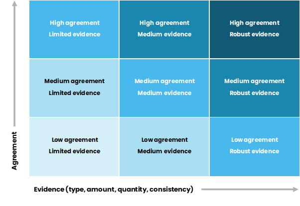
Source: IPCC, 2010.
Based on this framework, we rank the agreement, evidence and confidence we have with the results from the literature in a diagram at the beginning of each section. We clarify the hypothesis that the diagram is referring to. ‘Agreement’ shows the level of compliance across the studies on the stated hypothesis. ‘Evidence’ shows the availability and quality of the data and methodology available in the literature on the specific hypothesis. ‘Confidence’ is the combination of agreement, evidence and our evaluation of the credibility of the findings from the literature. The scoring scale used has the following characteristics:
the scale has a range from one to three,
three is the highest score on the scale and one is the lowest,
a score of one would reflect no agreement, no evidence and minimum confidence.
Figure 2 Example of the uncertainty assessment diagram
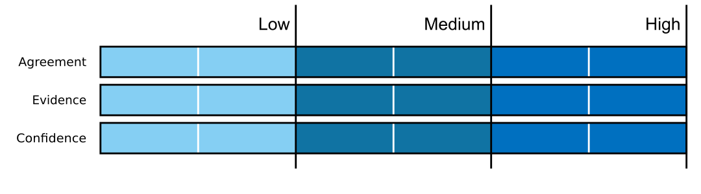
1.1.0.0.1 Source: Principal Economics.
The topics of interest in this analysis regarding impacts on factors of supply include:
Impacts of (non-environmental) regulations
Impact of environmental regulations
Availability of infrastructure
Supply chains and construction costs
On the demand side factors we include:
Affordability
Monetary policy and mortgage rates
Population and migration
Availability of finance
Household size
Tax policy, housing subsidies and other interventions
In our search for relevant literature, we used a range of keywords to find the available studies from different search engines. Appendix A provides a list of our keywords and the list of the studies that we used by the topic of interest.
1.2 Description of HPG and its factors
HPG has been discussed amongst politicians and academics extensively. Different solutions to housing crises have been proposed over the last decades. The solutions target factors of demand and supply and include increases in deposit ratios, a foreign buyer ban, decreases in zoning regulation, capital gains tax, RM reform amongst the others. The first step to finding a solution is to define the HPG issue correctly and identify its sources. Because of the inter-related impact of the supply and demand factors, one cannot look just at housing supply, or housing demand to judge its impact on housing outcomes. All these aspects must be considered together.4
This section provides a description of the HPG and the related factors using a range of publicly available data. The purpose of this section is to provide some background and motivate the topics of the studies that we review in the next sections. We provide the findings from our review and any causal inference about the impact of different factors of HPG in the next sections. We intend to provide a description of the HPG over the last fifty years for the 1971-2021 period. When data is not available, we illustrate and describe the data for the longest timeframe available.
New Zealand experienced a significant HPG over the last fifty years
Figure 3 shows the nominal changes in housing prices using a house price index over the 1971-2020 period.5 Nominal house prices are 82.5 times (8251 percent) higher in 2020 than in 1971 (and 342 percent higher in 2020 than in 2001).6 In contrast, over this period, nominal rental prices have grown by around 18.3 times7 and the cost of consumer goods and services has increased 15.7 times based on the CPI.8 The grey shaded areas show a range of major worldwide crises. For most of these crises, the HPG has been small or zero. However, during the Covid-19 pandemic, there has been a significant increase in (nominal) house prices by 34 percent from Jan 2020 – Jun 2021. We describe changes in other factors during these crises in the next figures.
The difference between CPI and the house price index indicates that house price inflation has increased significantly faster than other goods and services. For the balance of this report, we deflate house prices (against the CPI) and present real house price growth in the following paragraphs.
Figure 3 Nominal changes in housing prices
Source: Bank for International Settlements, OECD, Statistics NZ, Principal Economics analysis.
Note: We source seasonally adjusted real property price index from The Bank of International Settlements and adjust to nominal prices using the Statistics NZ CPI, seasonally adjusted rental price index from the OECD and the Statistics NZ CPI. All data is then rebased to 1971 = 100. We highlight notable recessionary periods in New Zealand identified by Reddell et al., (2008). These include the First Oil Price Shock (1974 – 1977), The Second Oil Price Shock (1979 – 1982), The 91 – 92 Recession, (attributable to the 1987 share market crash, subsequent monetary responses and impacts of the first Gulf War - 1991 – 1992), The Asian Crisis and drought (1997 – 1999), we add COVID-19 as an additional recessionary period (2020-).
Over the last fifty years, house prices have grown four times faster than other consumer goods and services
Figure 4 shows the (real) house price growth on the left (vertical) axis and the percentage annual change in residential mortgage floating rate and Official Cash Rate (OCR) on the right axis. The compound average growth rate (CAGR) in house prices over the last fifty years was 3.12 percent and house prices have grown by 364 percent in real terms over this period. This suggests that house prices have grown almost four times faster than other consumer goods and services. The CAGR over the last twenty years (between 2001 and 2020) is 5.23 percent and the real HPG is 176.9 percent. OCR and mortgage rates have decrease significantly over the Covid-19 pandemic period by 0.75 percent.
As will be discussed in the literature review sections, one commonly cited reason for HPG are the low interest rates that have ensued since 1991, enabling greater serviceability of mortgages and higher borrowing potential. As shown in Figure 4, over the 1971-2021 period, mortgage floating rates have been extremely volatile with a minimum of 4.51 percent in December 2020 and a maximum of 20.5 percent in June 1987.
Figure 4 House price growth and residential floating mortgage interest rates
Source: Bank of International Settlements, RBNZ (years 2004 – 2021), Te Ara (years 1966 – 2008), Stroombergen, (2010), Principal Economics analysis.
Note: We source historic variable first-mortgage housing rate (1966 – 2008) from Stroombergen, (2010) and append the residential mortgage floating interest rates from RBNZ, opting for RBNZ data for overlapping years. Similarly, the OCR has been sourced from the RBNZ. We discuss the source and adjustments to made for real house price s.a. series earlier this report in Figure 7. We rebase the real property price index sourced from The Bank of International Settlements to 1971. We highlight notable recessionary periods in New Zealand identified by Reddell et al., (2008). These include the First Oil Price Shock (1974 – 1977), The Second Oil Price Shock (1979 – 1982), The 91 – 92 Recession, (attributable to the 1987 share market crash, subsequent monetary responses and impacts of the first Gulf War - 1991 – 1992), The Asian Crisis and drought (1997 – 1999), we add COVID-19 as an additional recessionary period (2020-).
New Zealand HPG has been the highest during the Covid-19 pandemic
Figure 5 illustrates the changes in real house prices for New Zealand and other countries. Over the 1971-2021 period, the HPG in New Zealand has been the second highest, with slightly slower growth than the UK. The response of different housing markets to crises has been different. For example, the GFC led to significant price decreases in the US and the UK, with smaller increases in New Zealand and Germany, and raised house prices in Australia and Canada. This partly reflects the impact of local monetary policy and the availability of finance to appropriately respond to a short-term economic crisis. During the Covid-19 pandemic, most countries have experienced increases in house prices, partly due to lower mortgage rates. During this period, New Zealand has the highest HPG amongst the listed countries, which may indicate the impact of lower mortgage rates combined with the shortage of housing evident from the already increasing house price trend before the Covid-19 period.
Figure 5 International changes in real house price
Source: Bank for International Settlements
Note: We source seasonally adjusted real property price index from The Bank of International Settlements. All data is rebased to 1971 = 100. We highlight notable recessionary periods in New Zealand identified by Reddell et al., (2008). These include the First Oil Price Shock (1974 – 1977), The Second Oil Price Shock (1979 – 1982), The 91 – 92 Recession, (attributable to the 1987 share market crash, subsequent monetary responses and impacts of the first Gulf War - 1991 – 1992), The Asian Crisis and drought (1997 – 1999), we add COVID-19 as an additional recessionary period (2020-).
Over the last decade, the cost of housing consumption has increased more significantly for renters
Figure 6 shows how real housing costs for renters and owners since 2007. Total mortgage payments have increased slower than the rent payments. The principal payments have increased more significantly than rents. his is driven by increased house prices. The mortgage interest rates have decreased as a result of progressively lower interest rates. The higher increase in cost of renting compared to homeownership has potentially led to increased demand and higher HPG over the last decade.
Figure 6 Real housing cost indices
Source: Statistics NZ, Principal Economics analysis.
Note: We source household expenditures on housing from the Statis NZ Household Economic Survey and construct an index for each expenditure type. This is then deflated by the CPI to determine the real housing cost price indices shown in the figure. We highlight notable recessionary periods in New Zealand identified by Reddell et al., (2008). These include the First Oil Price Shock (1974 – 1977), The Second Oil Price Shock (1979 – 1982), The 91 – 92 Recession, (attributable to the 1987 share market crash, subsequent monetary responses and impacts of the first Gulf War - 1991 – 1992), The Asian Crisis and drought (1997 – 1999), we add COVID-19 as an additional recessionary period (2020-).
The cost of housing consumption, however, has not increased nearly as high as house prices
Figure 7 illustrates the seasonally adjusted (s.a.) residential rental price over the 1971(Q1)-2020(Q4) period. The 19.4 percent rise in real rental prices suggests that the cost of housing consumption has grown faster compared to other consumers good and services over the last fifty years. The rate of real rental prices growth (19.4 percent) is, however, significantly lower than that of real house prices (364 percent). The relatively high HPG compared to growth in cost of renting may be an indicator for high speculation incentives. The “Bright-Line” test is a tax instrument for addressing potential speculative behaviour. We discuss the potential impact of the tax policy and “Bright-Line” test in section 3.6.
Figure 7 Residential rental prices
Source: Bank for International Settlements, OECD, Statistics NZ, Principal Economics 2021 analysis.
Note: We source s.a. real property price index from The Bank of International Settlements, s.a. rental price index from the OECD and Statistics NZ CPI. We rebased all indices to 1971, deflate s.a. rental price index using the CPI and calculate the quarterly year-on-year change for relevant series shown in Figure 7. We highlight notable recessionary periods in New Zealand identified by Reddell et al., (2008). These include the First Oil Price Shock (1974 – 1977), The Second Oil Price Shock (1979 – 1982), The 91 – 92 Recession, (attributable to the 1987 share market crash, subsequent monetary responses and impacts of the first Gulf War - 1991 – 1992), The Asian Crisis and drought (1997 – 1999), we add COVID-19 as an additional recessionary period (2020-).
Regions with increased employment opportunities have experienced higher HPG
As shown in the left hand side in Figure 8, between 1992 and 2020,employment density across New Zealand regions grew with significant higher densities in large urban areas, more than doubling in the regions of Auckland (211 percent) and Bay of Plenty (209 percent).These regions have also experienced some of the highest growth in real house prices over the same period with 293 and 268 percent house price growth, respectively – as shown on the right map. The high house price growth associated with high employment opportunities may be an indication of the positive association between international (and local) migration and HPG. While there is a positive correlation between HPG and the growth in employment density, the ratio of the two growth series varies significantly across regions, which suggests the importance of the impact of other related factors on HPG. We review the impact of population growth on HPG in section 3.3.
Figure 8 Growth in employment density and real house prices
Source: REINZ, Statistics NZ, Principal Economics analysis.
Note: We use employment data from the Statistics NZ Household Labour Force survey and calculate the employment densities using regional land areas reported in Statistics NZ geographic boundaries files. We amalgamate areas to match those reported by REINZ for house prices to allow for comparisons. We source house prices from REINZ and deflate the reported data for inflation using the Statistics NZ CPI before calculating house price growth.
The population growth outpaced the housing supply
The supply of housing has not grown proportionately to the growth of population. Figure 9 shows that the numbers of new building consents across New Zealand have grown by 66 percent, while growth in population has been 75 percent over the 1971(Q1) – 2020(Q4) period. As will be discussed in section 3.4, the gap between demand and supply has further widened because of the decrease in the size of New Zealand households, which requires more dwellings to be supplied. We review the factors of this stringent housing supply in section 2.
Figure 9 Building consents and population growth
Source: Statistics NZ, Data 1850, Principal Economics analysis.
Note: We source our annual population data up to 2017 from Data 1850 and append additional years from Statistics NZ and determine the annual change. We use monthly new residential building consents data from Statistics NZ and aggregate by calendar year. We highlight notable recessionary periods in New Zealand identified by Reddell et al., (2008). These include the First Oil Price Shock (1974 – 1977), The Second Oil Price Shock (1979 – 1982), The 91 – 92 Recession, (attributable to the 1987 share market crash, subsequent monetary responses and impacts of the first Gulf War - 1991 – 1992), The Asian Crisis and drought (1997 – 1999), we add COVID-19 as an additional recessionary period (2020-).
Planning regulations limited urban growth and led to a less responsive housing supply
In the absence of other costs, a higher HPG usually leads to increased incentives for the construction sector to supply more housing. However, the supply of housing has not been responsive to HPG in New Zealand - as will be discussed in Section 2. Using Auckland as an example, Figure 10 shows that growth in the number of dwellings has occurred mostly in the CBD and limited areas on the periphery of the city.9 This is an indication of the impact of regulation that has limited both brownfield and greenfield urban growth opportunities. (Cooper & Namit, 2021; Lees, 2017, 2019; Martin & Norman, 2020; Norman et al., 2021; Parker, 2021; Torshizian, 2016)
Investment in housing has grown at a faster rate than any other asset
Figure 11 shows the proportion of net capital stock (replacement value) across each asset type over the years of 1972-2019 with residential building increasing from 34 percent to 48 percent of total capital stock. Bassett et al. (2013) suggest this represents a “drag on New Zealand’s investment patterns” with investment in more productive sectors losing out to the housing market. We review the literature on the impact of the availability of finances in section 3.5.
The wide range of regulatory changes over the last century has constantly affected the housing market
Based on the literature, there has been a wide range of Acts, reforms and legislations that have affected the housing market in the last century. As shown in Figure 12, notable regulations including the RMA and the Building Act of 2004 follow earlier regulations in the housing market landscape. As will be discussed in our review of the literature, because of the inter-related impacts of these regulatory frameworks, our understanding of the impact of each regulation on HPG is limited.

1.3 HPG and housing affordability
The significant HPG has led to a lower housing affordability across all regions and most significantly in Auckland.
Simple measures such as the median-income house-price multiple shown in Figure 13 can provide an indicator for housing affordability. Accordingly, the median price to income multiplier in Auckland has increased from 7.5 in 2000 to 12 in 2020. While indicators tend to be blunt tools for describing affordability, an increase in the ratio of median house price to income from 6.02 to 9.74 for New Zealand is a significant sign of increasing housing affordability issues. We review housing affordability and its factors in section 3.1.
Figure 13 House price to household income median multiple10
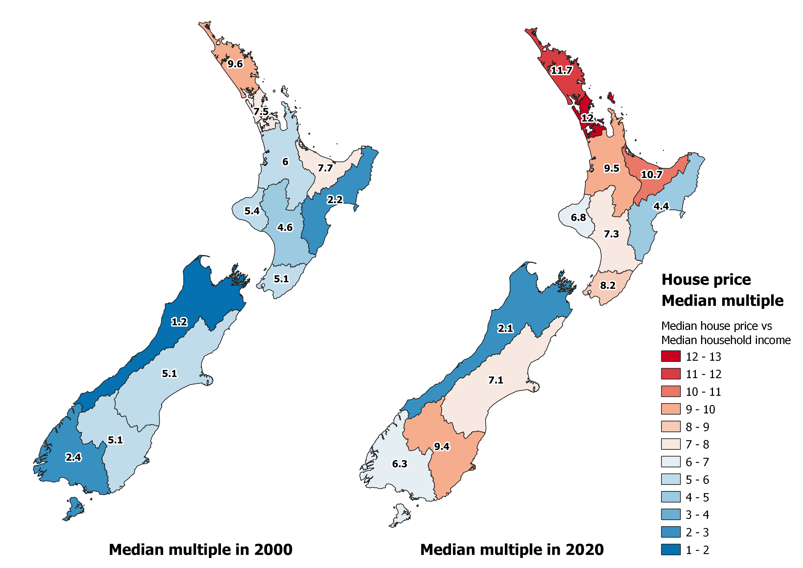
Source: REINZ, Statistics NZ, Principal Economics analysis.
Note: We source weekly household median wage and salary incomes from the Statistics NZ Household Labour force survey. Median house prices have been sourced the REINZ. In order to calculate the median multiple in each area and year we harmonize the datasets from REINZ and Statistics NZ by taking the average, median house price for the relevant years and areas (where areas are reported differently between sources) and calculate the stratified average household income based on household counts to determine household incomes. Our weekly estimates are then converted to annual based on a 52-week year.
The price that the median household income group could afford to pay has increased significantly over the last fifty years
The price that a household can afford to pay is a function of a range of factors, including changes in mortgage rates and household income.11 We used our housing affordability simulation model (ASIM) to show the changes in household affordability of the median household income group over the 1970-2020 period.12 As illustrated, there is a strong positive correlation between the amount that households can afford to pay and the median house price. While the mortgage rates have increased significantly up to 1986, the significant rise in income contributed to higher housing affordability levels. We review the relevant literature in sections 3.1 and 3.2.
Figure 14 Housing affordability/mortgage serviceability over time
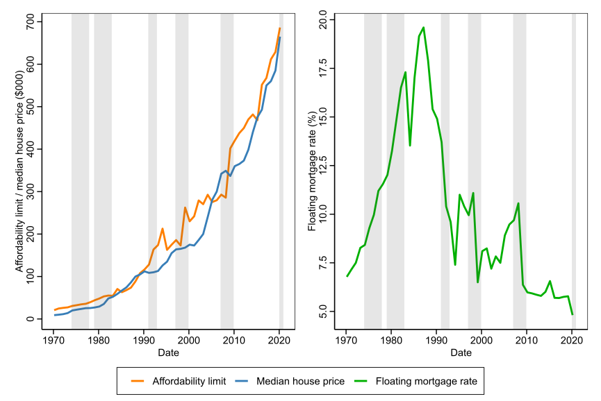
Source: Statistics NZ, Bank for International Settlements, REINZ, RBNZ, Te Ara (years 1966 – 2008), Stroombergen, (2010), Principal Economics analysis.
Note:We estimate the Affordability Limit for the median households in New Zealandusing an adjusted multiplier (AM) which isthe maximum affordable loan to income ratio given the interest rate(i), the down-payment ratio (β), term of the loanandthe proportion of income a household allocates to mortgage payments(α). The formula we use for determining the adjusted multiplier is shown below.
\[AM = R \times \left( \frac{{1 - \left( 1 + i \right)}^{- N}}{i} \right),R = \frac{\propto}{1 - \beta}\]
We assume a down-payment ratio of 5%, 25-year loan term and 50% income to mortgage payment ratio across all periods to determine the Affordability limit shown in Figure 14. Median household incomes house prices have been sourced from Statistics NZ Household Labour force survey for the years of 1998 – 2020, which we backdate to 1970 using the average weekly income index. While this is an imperfect estimate given differences in household composition over time, it provides a reasonable long-run estimate of household incomes levels given the data available. We source historic variable first-mortgage housing rate (1966 – 2008) from Stroombergen, (2010) and append the residential mortgage floating interest rates from RBNZ, opting for RBNZ data for overlapping years. We rebase the real property price index sourced from The Bank of International Settlements to 1971. We highlight notable recessionary periods in New Zealand identified by Reddell et al., (2008). These include the First Oil Price Shock (1974 – 1977), The Second Oil Price Shock (1979 – 1982), The 91 – 92 Recession, (attributable to the 1987 share market crash, subsequent monetary responses and impacts of the first Gulf War - 1991 – 1992), The Asian Crisis and drought (1997 – 1999), we add COVID-19 as an additional recessionary period (2020-).
The gap between affordability levels of the highest and lowest income groups has widened
Figure 15 shows the price that each household income group can afford to pay for purchasing a house. We have assumed that the proportion of income allocated for homeownership is fixed at 50 percent. Accordingly, the affordability for higher income deciles has increased at a faster rate over the years of 2007 – 2019. Affordability limits for the decile 9 household income group has increased by 23 percentage points higher than decile 1.
Figure 15 Housing affordability/mortgage serviceability at different income levels
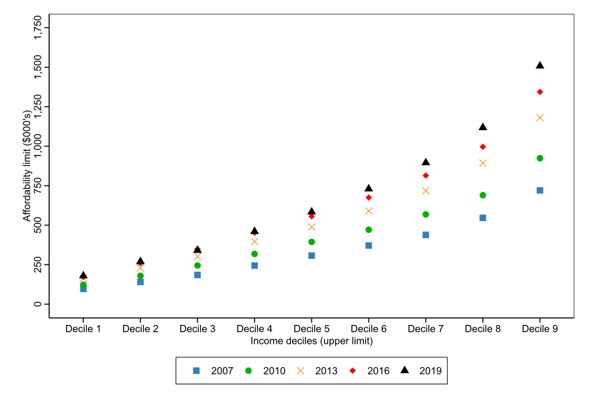
Source: Statistics NZ, RBNZ, Principal Economics analysis.
Note: We estimate the affordability limits by year and income decile as categorised in the Statistics NZ Household Economic Survey. Affordability limits are determined using the formula noted in Figure 14 using the upper income limits for each decile group and the 2-year fixed mortgage interest rate.
The high HPG, increased affordability limits and higher rental prices relative to mortgage payments have led to lower homeownership over the last two decades
As shown in Figure 16, in 1971, 64.5 percent of households owned their own home, with this proportion peaking in 1991 at 73.8 percent. Home ownership has since gradually declined to 64.5 percent in 2018. The year 1991 is significant as it has marked the end of the home-ownership support programmes and the start of a significant sell-off of state housing in New Zealand (Johnson et al., 2018). Over the period 1991 – 1999, state housing stock decreased by 8,900 units or 13 percent of the total state housing stock (Schrader, 2012).
2 Impact of the factors of supply
When there is no scarcity of housing, the market is competitive and there is no reason for the existence of any price premium on a property.13 In a competitive market, all demand will be met with a supply. Around the world, there are cities with relatively high responsiveness of housing supply. In New Zealand, however, many studies estimate significant impacts from housing supply rigidities on housing supply and prices. For example, while the supply elasticity of New Zealand is estimated at 0.7114, the cities across the United States, with similar population density levels, have a supply responsiveness factor (supply elasticity) of 2.15
As presented in Figure 17, in response to increases in population, a rigid supply provides less housing (gross floor areas) and leads to higher house prices. As PwC (2020) discusses, the impact of supply rigidities is magnified during periods of faster population growth. PwC (2020) suggests that improving competitiveness in the land market such that the supplier of land and the consumers can compete across space and land uses, can lead to a less rigid housing supply.
Figure 17 Impact of rigid supply on house prices
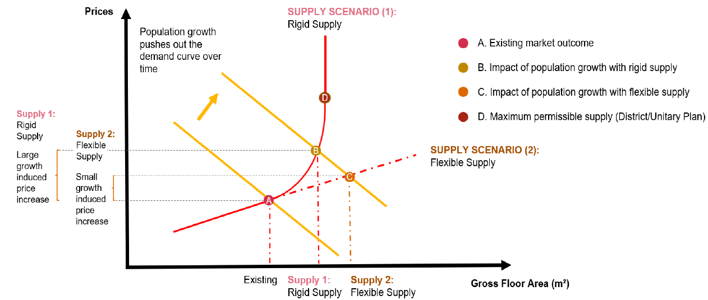
Source: PWC, 2020.
ANZ Research (2020) reflected on the supply issues; and discussed the existence of an infrastructure deficit and a significant housing shortage of between 60 and 120 thousand homes. They cited the scarcity of buildable land as an increasing problem, due to planning and zoning restrictions, land banking, urban-drift, poor infrastructure provision and other land-use pressures. We review the literature and discuss these factors further in the next sections.
There has been extensive literature on the impacts of factors of supply on house prices. Factors of supply have been discussed more thoroughly compared to the demand factors. There are multiple reasons that may have contributed to this:16
Most factors with direct impact on HPG are driven by the central and local government regulations. Most factors of demand have wider implications for the economy, with difficulties in measuring their impacts on HPG
Technically, capturing the impact of supply factors is relatively easier than capturing the impact of demand factors (given their wider implications for the economy)
There is a potential tendency for academic economists to replicate the work of their international peers, which is more focused on the factors of supply.
The lower responsiveness of housing supply (to a 1 percent increase in house prices) over time is an indication of the costly (restrictive) planning regulations
Grimes (2007) used a model (based on Tobin’s “q” approach17) to test the determinants of new housing supply. His results suggest that an increase in house prices by 1 percent (relative to total development costs) increases the new housing supply by a factor of between 0.5 and 1.1 percent.
We have listed the housing supply elasticity estimates available from the literature in Table 2. They capture the impact of a 1 percent increase in real house prices on the rate of new housing consented.18 Given this and the period of data coverage, the highest and lowest estimate of supply elasticities estimated in most of these studies provide information about the potential impact of planning policy within the RMA regulations.
The regional estimates using most recent data for Auckland, Hamilton, Tauranga, Christchurch and Queenstown suggest a decrease in the supply response to an increase in house prices over time.19 The reason for this decrease in supply elasticity can be geographic constraints, planning regulations, and technical constraints in the construction market (MRCagney et al., 2016; Saiz, 2010). We discuss this further in the next section.
Table 2 Housing supply elasticities
| Author | Auckland | Hamilton | Tauranga | Wellington | Christchurch | Queenstown |
|---|---|---|---|---|---|---|
| Sanchez and Johansson (2011) Nation-wide model (1994 -2007), Quarterly data | 0.705 | 0.705 | 0.705 | 0.705 | 0.705 | 0.705 |
| Grimes and Aitken (2010) TLA level (1991 -2004), Quarterly data | 1.000 | 2.900 | 1.200 | 0.200 | 1.100 | 3.600 |
| Grimes and Aitken (2006) National average (1981-2004) | 1.000 | 1.000 | 1.000 | 1.000 | 1.000 | 1.000 |
| (Hyslop et al., 2019) | 1.200 | 1.200 | 1.200 | 1.200 | 1.200 | 1.200 |
| PwC (2020) TLA level (1998 -2019), Monthly data | 0.876 | 0.840 | 0.517 | 1.353 | 0.778 | 0.875 |
Source: Sanchez and Johansson (2011); Grimes and Aitken (2010); Grimes and Aitken (2006); Hyslop et al., 2019; PwC, (2020).
2.0.0.1 The minimum cost of an irresponsive housing supply to the New Zealand economy is equal to 0.39 percent of its GDP ($1.3 billion per annum)
Nunns (2019) studied the socioeconomic impacts of rising house prices in New Zealand.20 His results suggest that a comprehensive removal of the housing supply constraint in New Zealand, with no trans-Tasman migration, will lead to an increase in per worker output by 0.8 percent (we review this study in more details in section 3.3). As the author mentioned, the study provides an indicative figure for the potential cost of a rigid housing supply. The lower land prices should be associated with allocation of capital (from other sectors of the economy) to lead to an increase in housing supply. This reallocation of the resources and the interaction between the housing sector (primarily the construction sector) and the other sectors of the economy needs to be investigated in a future study.21
To estimate the economic impact of the existing supply constraint, we used Nunns' (2019) estimate of the output per worker impact as an input to Principal Economics’ Computational General Equilibrium (CGE) Model. Our high-level estimate suggests that the annual cost of the supply rigidity in New Zealand is around 0.39 percent of its GDP.22 This is in absence of a potential increase in immigration to New Zealand as a result of a lower cost of housing.
2.1 Impact of regulations
Description
Regulation is the main tool of local and central governments affecting house prices.23 In theory, a more permissive regulatory regime increases competition amongst landowners, and is associated with a lower (or zero) speculation opportunities and lower house prices. Therefore, to reach a competitive land market has been the focus of the NPS-UD (2020).
In practice, the impact of regulatory barriers, institutional inefficiencies, and uncertainties associated with regulations are closely inter-related. Technically, the land price measure consists of elements of both costs and benefits of regulation. A higher price may be an indication of the benefits of councils’ services, such as improved access to amenities and facilities, or the costs imposed by inefficient regulations.
Summary of literature review
As we review in this section, several economic studies of the impact of regulation, provide estimates of the costs of regulation but there are relatively few studies that have examined the benefits of regulation. For example, there are many studies trying to estimate the costs of urban limit regulations, but there is no study identified of the potential benefits of urban limit regulation (through decreased negative externalities from urban growth on neighbouring regions). This is potentially because regulation is associated with difficult-to-quantify (social) benefits. Based on the literature, we know that a market-driven housing market, with minimal regulations, leads to lower house prices24 but it might have higher costs not expressed in the market.
From the available literature, it is not clear if the available resources in the economy, including capital, labour and technology required for construction of new houses, will be able to provide the size and magnitude of housing required for a flexible housing supply at a reasonable price.
Uncertainty assessment: restrictive regulation has led to higher house prices.
Lees (2019) assessed the cost of land use regulations using four different methods (inspired by Glaeser & Gyourko (2003). For this analysis he used detailed unit record house sales data sourced from Auckland Council and CoreLogic, with coverage for the 2012-2016 period. After accounting for a range of factors, including financing and council fees, his results suggest that house prices significantly exceed construction costs and that the price to cost ratios have increased over time. For example, between 2012 and 2016, the price to cost ratio in Auckland has increased from 2.72 to 3.37. During the same period, the ratio for apartments has increased from 2.62 in 2012 to 3.5 in 2016. His results for Christchurch and Queenstown are similar to Auckland. Lees (2019) concluded that the supply has not been responsive to prices.25 Using the same data and methodology, Lees (2019) estimated the cost of regulation in Auckland can be up to 56 percent of the cost of an average dwelling. Figure 18 shows his estimates of the cost of land use regulation.26 Lees (2019) discusses that the estimated cost of land use regulation could capture anything that drives a wedge between prices and construction costs, including the costs imposed by planning regulations and potential costs imposed from geographic restrictions, such as steep terrain in parts of Wellington and Queenstown. However, Lees (2019) argues that the likelihood of geographic restrictions being the driver of the price margin is low.27
Figure 18 Land regulation costs
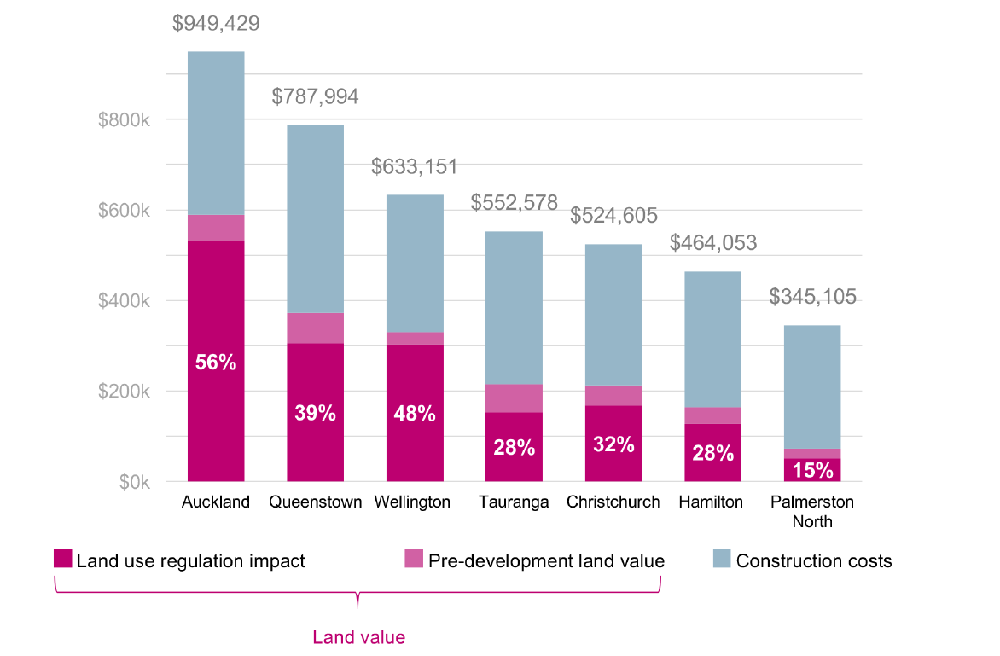
Source: Lees (2017).
A more competitive land market will increase competition between locations across a city and across different land uses. The decrease in the market power of landowners decreases land values. To achieve this, it is required that local governments promote development permission for both brownfield and greenfield developments, particularly in areas of high demand with better access to jobs. The results of a recent study by the Chief Economist Unit of Auckland Council confirm that more up-zoning (i.e. allowing greater housing density) is required to accommodate for the demand in areas closer to the city centre (Norman et al., 2021). The study does not account for the costs of supply in different locations.
In a comprehensive study of the costs and benefits of the NPS-UD, PwC (2020) estimated direct and indirect impacts of intensification, minimum car parking requirements, and local government’s strategic planning requirements. Their results suggest that the benefit to cost ratio (BCR) of achieving higher responsive housing supply (to price changes) across New Zealand cities is between four and seven.28
MRCagney et al. (2016) provides a comprehensive cost benefit analysis for policy options for the NPS-UDC. They investigated the impact of planning constraints including general zoning restrictions, MUL, building height limits, minimum parking requirements, apartment etc. Their results suggest that a less restrictive approach to urban planning that enabled sufficient supply to housing would reduce the rate of house price inflation by 50 percent with net benefits of $1.4 billion to $10.7 billion over the 2001-2013 period.
The viewshaft policy costs Auckland economy $1,366 billion
Cooper & Namit (2021) investigated the impact on house prices of Auckland’s viewshaft policies which restrict development to protect regionally significant views, to volcanos and the museum, for example. The CBD Viewshaft, for example, covers 1.7 million square metres of land. They used 2014 property (rating) data29 and viewshaft information from Auckland Council. The study uses a robust regression discontinuity method and accounts for the difficult to quantify benefits of viewshafts. Their results suggest that land values per square metre within 75 metres of the viewshaft are $1,282 higher than those located farther away (between 75 and 175 metres from the viewshaft boundary). Figure 19 shows the land values at different distances from viewshaft. Accordingly, for the properties located at the distance of 100 metre from the viewshaft, the estimated difference between land values per sqm for properties inside the viewshaft are on average $2,535 lower than the properties at the same distance located outside the viewshaft. After controlling for other features of land, the difference increases to $2,939. They conclude that the net cost from the viewshaft policy to the Auckland economy is $1,366 million (per year).
Figure 19 Land values and distance from viewshaft
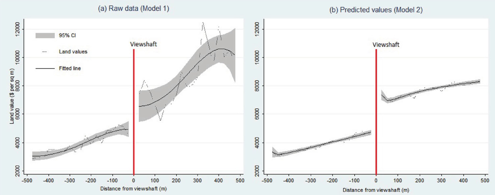
Source: Cooper & Namit (2021).
Grimes & Aitken (2006) studied determinants of new housing supply and the impact of supply responsiveness on price dynamics. Their results show that a 1 percent increase in house prices relative to total development costs raises new house supply with an elasticity of between 0.5 and 1.1 percent. Since the study has controlled for land prices, the estimated low response of the housing supply (to price increases) is likely driven by regulatory restrictions in the housing market. The authors also note that land prices have a strong impact on new house construction. A 1 percent increase in land prices is estimated to lift total development costs by 0.33 percent, which in turn leads to a 0.37 percent decrease in supply of houses. The data used is a quarterly dataset of median house prices for New Zealand over the period of 1991Q1 to 2004Q2 covering 73 Territorial Local Authorities from QVNZ. Given the lack of granularity of their data, the study does not provide more information about potential variations across location.
Greenaway-McGrevy (2018) assessed the impact of land use regulation on house prices in the Auckland region. They used a difference-in-difference (DiD) method and a unit level dataset of house sales for their assessment. The authors compared house price sales for property pre and post the Auckland Unitary Plan to test price effects of up-zoning (i.e., relaxing a restriction on site development). Their results suggest that up-zoning generated a significant increase in prices for underdeveloped properties relative to highly developed properties and properties that were not up-zoned; up-zoning in the most intensive residential zone generated a premium of 22.2 percent.
Parker (2015) uses the results of Bertaud, (2014) to show that Auckland’s population density is significantly higher in the CBD and almost flat in other areas. He discusses that the impacts of planning constraints are reflected by the non-continuous rate of population density in Auckland compared to other metropolitan areas (for illustration of the non-continuous density in Auckland see Figure 22). He argues that planning constraints that cause the need to build on progressively, more difficult sites lead to lower construction productivity. Additionally, planning constraints cause difficulties in buying large land areas for efficient scale development. Changes in population/dwelling density over time could provide more information about potential impact of policies. We will discuss this further in the next section, to provide an understanding of the potential impact of the RMA.
Grimes & Mitchell (2015) conducted interviews with 16 developers, providing information on 21 developments across Auckland to assess the costs of the rules and regulations (as perceived by developers).30 Their results suggest that building height limits and balcony requirements can each have costs impacts of over $30,000 per apartment. The council’s desired mix of typologies and increased minimum floor to ceiling heights can each add over $10,000 per apartment. For the residential section and standalone dwellings, infrastructure contributes not related to a specific development cost at around $15,000. These includes costs such as extended consent process, section size requirements, and other urban design considerations. They also assessed the potential loss in development capacity31 from council’s rules and regulations. Their results suggest a median loss in capacity of 22 percent (for the developments that proceeded).
Norman et al. (2021) used GIS mapping to illustrate that a higher land value correlates with high density housing areas. Assuming demand is highest at the city centre, they show that the Auckland Council’s zoning is not consistent with where demand is the highest.
Cavalleri, et al. (2019) use a stock-flow type model of supply and demand using panel data from 25-countries, between 1980Q1 and 2017Q4. They used an index as a proxy for land-use restrictiveness.32 Their findings suggest that: regulations that restrict housing tend to result in more vacant houses; regulations exacerbate mismatches between supply and demand; rent controls reduce the responsiveness of housing supply to demand pressures (though the effect is small); and that limits to urban expansion (geographic and regulatory) reduce incentives for new construction. > Mayer & Somerville, (2000) used quarterly data from a panel of 44 U.S. metropolitan areas between 1985 and 1996 to study the impact of house prices and costs on new housing construction. Their results suggest that metropolitan areas with more extensive regulations can have up to 45 percent fewer housing starts and price elasticities 20 percent lower than those in less-regulated markets. Also, their results suggest that a 1 percent increase in house prices temporarily increases new construction by 15 percent over current and following 5-quarters. The results of their modelling suggest that the regulations that lengthen the development process have an uneven temporal effect on supply elasticity.
Urban growth boundaries have led to HPG High agreement, High evidence
Based on the previous literature, the Productivity Commission's (2012) housing affordability inquiry, the price of land is responsible for between 40 and 60 percent of the cost of new dwellings in Auckland (in 2012) and is a driver of house price inflation. The inquiry refers to the results of a model that they estimated and identified the Auckland MUL as a driver of supply side rigidity. Our review of their model suggests that that there is a range of related factors that have not been accounted for in the model and may affect the results of their estimations. However, their results are consistent with the outputs of other studies using more comprehensive economic modelling frameworks.
Parker (2021) provides a comprehensive (theoretical) economic framework for the assessment of the impact of a competitive land market on house prices. His framework is based on a well-known economic modelling framework – AMM (Alonso-Muth-Mills model), which was widely used in previous studies in New Zealand.33 Parker discusses that, in an uncompetitive market, land prices on the fringe of the city depend on the bargaining power of households (demand for residential land) and farmers (demand for agricultural land). The output of his economic framework suggests that, in an uncompetitive land market, where there is a cap on the urban growth boundary, the price of residential land increases as a result of regulation, as illustrated in Figure 20.
Figure 20 Urban boundary limit leads to an increase in residential land prices
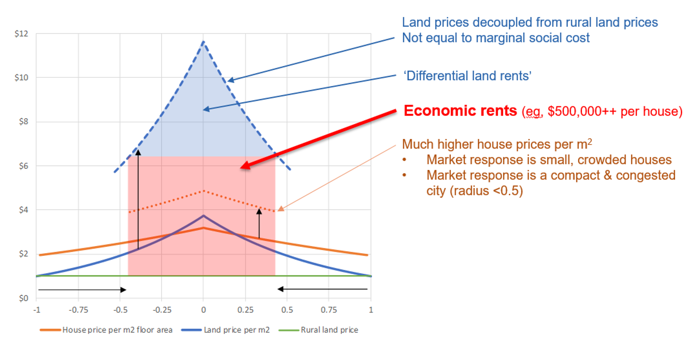
Source: Parker (2021). The horizontal axis shows distance from the city centre and the vertical axis is the price of land.
The prominent study of Grimes & Liang (2009) on the impact of the MUL on land prices has been cited widely as an indicator cost of regulation. We consider MUL regulation as an environmental regulation as its successor, the Rural Urban Boundary (RUB) under the Auckland Unitary Plan is denoted as a district plan land use rule pursuant to section 9(3) of the RMA. The authors study the difference in land prices between parcels located inside and outside of the urban boundary. Their results suggest that land inside the boundary is significantly more expensive than the land outside the boundary by a factor of between 7.9 and 13.2. As the authors noted, they do not have any information about the value of infrastructure that has been potentially capitalised into the land values inside the MUL.34 Also, the timeframe of the available data does not provide them any information about land prices before and after any MUL expansion. This study provides valuable information about the price increases associated with limitations imposed by MUL regulation.
Martin & Norman (2020) study the price difference between the land inside the RUB and the farm land outside the boundary.35 Consistent with the results of the previous studies, their study suggest the existence of a price premium for the land inside the urban boundary. However, their results suggest that converting farmland or lifestyle blocks into bulk-infrastructured residential sections would be unlikely to deliver land to the market substantially cheaper. Our review of the methodology of their study suggests that some of their assumptions have a significant impact on the results. For example, they refer to plans that suggest between 55 and 58 percent of land outside the urban boundary is unavailable for development, but they assume that only 35 percent of land outside the urban boundary is unavailable. This assumption is not justified and likely affects their results significantly. Our review of their methodology suggests that they have not used the location of the urban fringe in their analysis.
Zheng (2013) studied the impact of the MUL on land price. Consistent with earlier studies (for example, Grimes & Liang (2009)), his results suggest that the Auckland metropolitan urban limit results in upward pressure on residential land prices within the urban areas. His results show that the impact is uneven with a larger impact on land at the lower end of the price distribution. Also, when the supply of land on the urban periphery is restricted, the price of available residential land rises and new builds tend to be larger and more expensive houses.36
For the review of the impacts of the RMA and other regulations, it is important to differentiate between the impact of the regulation and the costs imposed from implementation of the regulations. The RMA categorises the activities that may exceed the limitations introduced by discrete plans to six categories, namely permitted, controlled, restricted discretionary, discretionary, non-complying and prohibited. The ‘activity category’ is a policy setting that determines the degree to which each element of a plan binds. The permission required for undertaking the activities that may affect the environment is called a ‘resource consent’ or ‘planning permission’. There is a chance of a regulatory impact on the probability of granting a resource consent. Torshizian (2015) defined ‘permissibility’ as the effective permission level granted by an activity status category. He investigated the permissibility of Auckland Council’s activity statuses and its impact on regional development. His results indicate that, once the characteristics of the activities are taken into account, a difference remains between the likelihood of different activity categories, and that interpreted as the bias associated with RMA regulation. Accordingly, the activity category ‘restricted discretionary’ (which restricts the scope of consideration to planners) is approximately 20 percent less permissive than ‘discretionary’, which is meant to be a more involved affair. His results suggest that the change in permissibility of the restricted discretionary activity has happened after the amalgamation in 2010.37 Also, after the amalgamation in 2010, the average likelihood of all activity statuses decreased by a factor of between -1.3 and -2.7 percent.38
Bassett et al. (2013) reviewed New Zealand’s housing affordability problem and the development of housing in New Zealand since the early 1900s. They provide a comprehensive review of the role of central and local governments in planning regulations over time. They argue that the lengthy and costly process of releasing land outside the Metropolitan Urban Limit (MUL) in Hobsonville, Flat Bush, Papakura, Karaka and Silverdale, between 1989 and 2010 was very costly (both in terms of expensive hearings and the social and economic costs of slow regional development).
Fernandez et al. (2020) studied the impact of proximity to Wetlands on residential property prices in Auckland. Their results suggest that proximity to natural wetlands is associated with lower house prices, but the interaction of artificial wetlands with parks is associated with higher house prices. They mention the importance of school zones on house prices, but do not account for that in their estimations. Their study does not account for proximity to other amenities and facilities and does not investigate causal relationships.
Cooper & Namit (2021) investigated the impact of Auckland’s viewshaft policies on house prices. Accordingly, the CBD Viewshaft covers 1.7 million square meters of land. Their results suggest that land values per square meter within 75 meters of the viewshaft are $1,282 higher than those located farther away (between 75 and 175 meters from the viewshaft boundary). They conclude that the net cost from the viewshaft policy to the Auckland economy is $1.4 billion (per year). The study uses a robust regression discontinuity method and accounts for the difficult to quantify benefits of viewshafts.
In an international study, Kallergis et al. (2018) investigates housing affordability across 200 cities.39 Their results suggest that a 10 percent increase in urban extent density leads to an 0.8 percent increase in price-to-income ratio. In the cities with enforced containment40 the price-to-income ratio is 1.6 percent higher than average. The advantage of this study is the large sample of the cities that they have included in their analysis. However, the analysis controls for a very few related variables to urban limit regulation and the results may not be interpreted as causal effects.
Table 3 Difference in land values across the RUB
| Author | Multiplier | Notes |
|---|---|---|
| Grimes & Liang (2009) | 7.9 – 13.2 | Controlling for area unit effects found a boundary effect of 5 – 6 in 2001. However, is likely to reduce the estimated boundary impact and underestimate results. |
| MBIE & MfE (2017) | 3.15 | Auckland is 3.15. Ratios of 1.53 - 3.15 depending on geographic area. |
| Zheng (2013) | 1.3 - 9.7 | Lowest price decile 9.7, Median price 5 Highest price decile 1.3 |
| Productivity Commission (2012) | 7.15 - 8.65 | 7.15 in 1995, 8.65 in 2010 |
| Martin & Norman (2020) | 0.006 – 0.052 | For residential-sized lands inside the Auckland RUB 2020. |
Source: Grimes & Liang (2009); MBIE & MfE (2017); Zheng (2013); Productivity Commission (2012); Martin & Norman (2020).
The studies reviewed above have discussed the impact of regulation on house prices. The literature on the impact of regulation on house price growth is limited. Torshizian (2018) estimated the impact of MUL expansion on house price growth in the Auckland region. This is the only study that captures the impact on prices of houses located in different proximities to the expanded area, before and after the expansion. The study captures the impact for the suburbs located nearby the expanded area and compares that with the suburbs with similar opportunity to expand. For benchmarking, the study uses the price growth of houses compared to the houses with similar price range located in the central area (which are not directly affected by an urban expansion). Results suggest that:
the price growth in expanded areas is similar to the central areas,
the price growth in areas nearby the expanded area is similar to the other areas with similar features, and
the price growth outside the urban boundary is significantly higher for areas located closer to the expanded area.
The author concludes that the reason for high price growth in the areas located outside the boundary and nearby the expanded area, is their expectation of future growth in their area.41
This expands the findings of the other studies by providing evidence for the lack of competition in the land market being a driver of house price growth. Accordingly, the lack of competition resulting from the MUL is associated with an average of 13 percent higher house price growth. This is equal to an average of 0.31 percent additional cost to the land values, which is equal to $4,730 (in 2021-dollar values).
Geographic constraints have not been the driver of HPG High agreement, Medium evidence, Medium certainty
As described, many studies of the regulation impacts do not directly account for the impact of geographic constraints. This is due to measurement issues. Given the robust economic assessment framework that these studies used and the high agreement across the studies, we conclude that the impact of geographic constraints on the findings of the studies of costs of regulation is insignificant.
Saiz (2010) investigated the impact of geographic constraints on urban development using GIS derived data (coastal areas and land steepness) for metropolitan centres in the U.S. over the period of 1970 – 2000. The findings show geographically constrained areas tended to be more expensive, with faster price growth. Furthermore, antigrowth local land policies are more likely occur in growing land-constrained areas.
Nunns (2019) provides an estimate of the likely costs imposed by geographic constraints. He defined geographic constraints as a lack of flat developable land.42 His results suggest that a 1 percent increase in geographic restrictions is associated with $39 per sqm higher land prices.
2.2 Impact of the RMA and environmental regulations
Description
The RMA and environmental regulations impact housing through their guidelines for councils’ planning regulation developed based on the RMA. Currently, the RMA is going through a reform. A successful reform will support the NPS-UD agenda, by improving the competitiveness of urban land markets43, and go beyond the requirements of the NPS-UD by providing a more certain regulatory framework that will lead to higher certainty around planning regulations.44
Summary of literature review
The literature on the impact of environmental regulation on HPG is limited. This is partly because of the overlapping impact of the RMA and the planning regulations. For example, it is not clear how much of the costs imposed from an urban-rural boundary regulation are because of the environmental limits imposed by the RMA versus the planning targets of intensification. The limited literature on the impact of environmental regulation is not supported with strong evidence. However, there is high agreement in the literature that a more transparent, permissive and well-monitored resource management regulatory regime leads to lower social costs through its impact on the planning regulations.
Most of the literature we include in this section is based on conference and policy papers and a parallel study of the impact of Resource Management reforms. For a robust understanding of the impact of RMA, we need further robust assessments using granular geographic data. The interaction between the environmental regulation and other legislations (and infrastructure planning) needs further investigation.
Uncertainty assessment: RMA has led to HPG (or the driver of costly planning regulation is RMA
There is not a clear distinction between the impact of environmental and non-environmental regulations. The impact of environmental regulation is mainly on the land use, which is expressed as the reason for the zoning regulations. The primary impact of land use regulation is on urban growth boundaries (at the periphery of the city) and the resource consents’ level of permission for different activities. The linkage between the zoning regulations and the RMA, however, is not supported with evidence. We reviewed the literature on the impact of urban growth boundaries in the previous section. While the urban growth boundary is not a restriction (directly) imposed by the RMA, a successful resource management legislation must provide clear instructions about its implications for the planning regulation (and monitor correct implementation).
Parallel to this review, Resource Economics, Principal Economics and Sapere (2021) assess the impact of RM reform. They discuss that the outcomes of councils’ planning regulation (driven by the NPS-UD), if accompanied by a permissive and transparent RM system, can lead to higher benefits than those from the NPS-UD alone. As shown in Figure 21, the combination of the features of the RM system and their interactions with the councils’ regulation may lead to a wide range of outcomes for the housing market.
Figure 21 Combined impact of RM system and planning regime
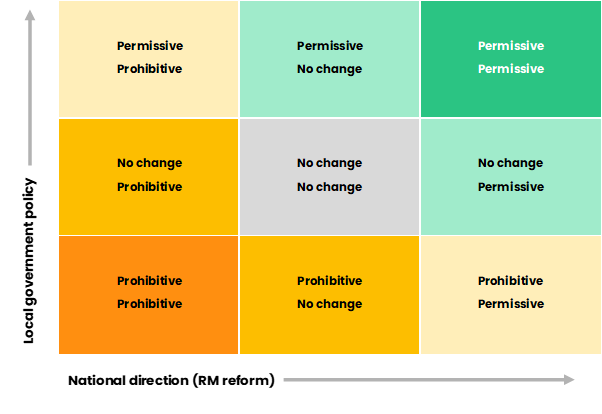
Source: Principal Economics.
The pattern of dwelling density in Auckland before and after the RMA effects come to existence in 1991 are shown on the left-hand side of Figure 22. As illustrated, the pattern has changed dramatically over time.45 This is consistent with the changes in pattern of land values illustrated on the right-hand side of Figure 22. The comparisons between the two graphs shows the high correlation between patterns of dwelling density and land prices over time.46
As shown in Figure 12, there has been many legislative changes over the 1980-2020 period that may have been associated with this change in the distribution of houses and prices. For example, the RMA and the local government reforms in 1989 led to widespread changes across New Zealand local governments. The 1989 reforms led to a decrease in the number of local governments by 90 percent (from 828 to 86 in 1989). The RMA played a complementary role to the 1989 local government reforms. There is a more careful assessment of the impact of the two reforms on providing enabling and effective development outcomes required.
Figure 22 Number of dwellings and land values at distance from CBD over time
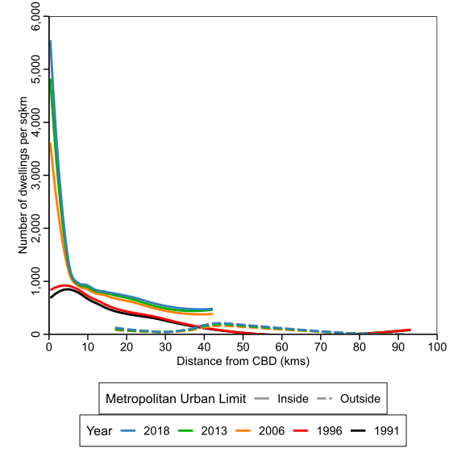
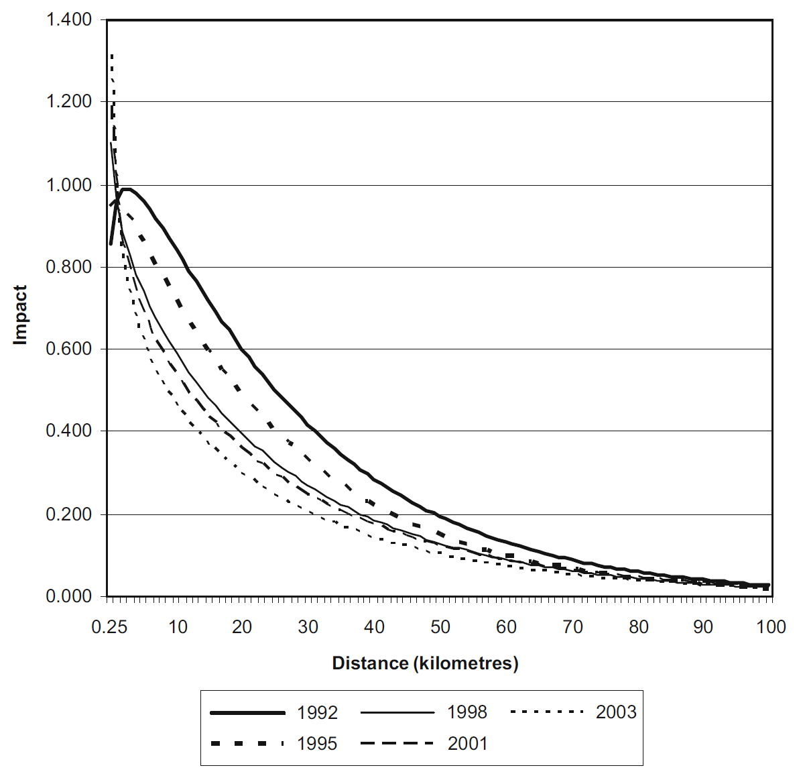
Table 4 High level housing outcomes of NPS-UD and RMA and the RM reform
| Outcomes | NPS-UD & RMA | RM reform |
|---|---|---|
| Affordability | NPS-UD has a range of recommendations contributing to housing supply elasticity, including:
competitive land markets and high-quality greenfield development |
- National direction and more clear legislation leads to decreases in consenting cost which translates into allocative efficiencies - Housing supply is responsive to demand, with competitive land markets enabling more efficient land use and responsive development, which helps improve housing supply |
| Choice | Improving housing choice through: - increasing planning flexibility. - aiming for agglomeration benefits – i.e. larger or denser places tend to provide greater variety of services and consumer goods |
Increase housing supply to better meet residents’ demand for housing (by type, size, location and price) |
| Māori participation | Recognise Te Tiriti and contains provisions aiming to enable Māori participation in the system | - Enabling the housing aspirations of Māori such as by enabling papakāinga developments - Providing opportunity for Māori to participate as Treaty partners across the RM system, including in national and regional strategic decisions. Māori will be sufficiently resourced for duties or functions that are in the public interest |
| Climate change | Better prepare for adapting to climate change and risks from natural hazards, and better mitigate emissions contributing to climate change | A reduction in transport carbon emissions versus the status quo from more efficient land use patterns through improved spatial planning |
| Improved System performance | Focused on improving effectiveness of planning regulations | Improve system efficiency and effectiveness, and reduce complexity, while retaining appropriate local democratic input |
The RMA reduces the responsiveness of housing supply high agreement, medium evidence, medium certainty
A successful RM system provides:
a regulatory framework that leads to higher certainty around zoning regulations.
a more flexible housing supply through providing a more permissive regulation and allowing more flexibility in housing supply.
Given the complementary roles of the RM system and the NPS-UD, Resource Economics et al (2021) discuss that the total impact of the RM system and NPS-UD is to achieve a responsive housing supply. To distinguish between the impact of the RM system (and the reforms) and that of the NPS-UD, we can use estimates of the impacts of an improvement in the resource consent process and its impact on land values. Any impact on land values in addition to the estimated impacts of resource consent is likely driven by the NPS-UD.
The RM system (and the reform) provide a national level direction (or centralisation). This leads to a decrease in the chance of negative externalities from one region’s urban growth on other regions;47 and an increase in certainties around permitted and prohibited activities (with less room for discretion). Also, one of the objectives the reforms is to decrease the number of Acts to resolve any potential inconsistencies across different pieces of legislation leading to a higher certainty/transparency level.
Torshizian (2015) estimated the likelihood of granting a consent to different activity statuses after accounting for the features of the applications. He argues that the likelihood of granting a consent should be similar across all activity statuses after accounting for the features of the application. After accounting for the likelihood of not applying for a consent due to its high processing cost (as a combination of time required for processing a consent and the associated fees), his results suggested that the activity category ‘restricted discretionary’ (which restricts the scope of consideration to planners) is approximately 20 percent less permissive than ‘discretionary’, which is meant to be a more involved affair. This figure provides an estimate of the impact of improved certainty on the likelihood of granting a consent.48
The results of that study suggest that a 1 percent increase in the processing delays is associated with 1.4 percent lower likelihood of granting a consent. To capture the affordability impacts of lower consenting likelihood, we use the results of Nunns (2021), which suggests that a 1 percent higher likelihood of consent processing delays is associated with $24 per sqm increased costs (in term of land price distortions). Using these multipliers suggest that a 1 percent lower likelihood of granting a consent is associated with $17.1 per sqm higher prices. Figure 23 shows the relationship between the number of processing days of a resource consent application and the likelihood of granting a consent. Accordingly, the chance of granting a consent decreases significantly as the processing time increases.
Figure 23 Impact of processing delays on the likelihood of granting a resource consent
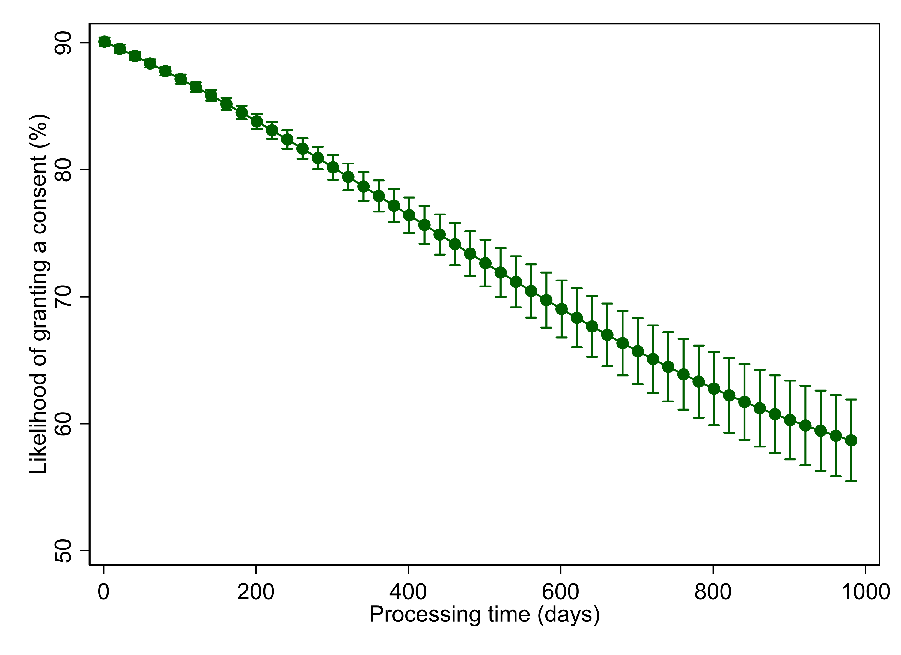
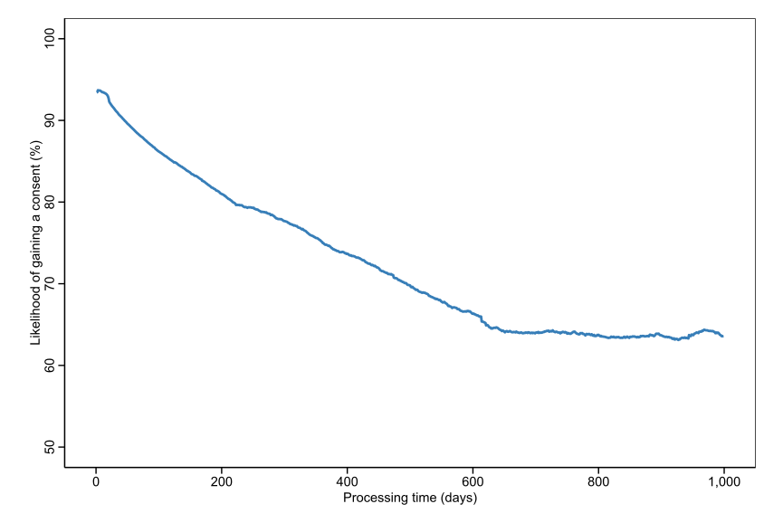
Source: Auckland Council; Torshizian (2015) on the left hand side show the relationship between 2005 and 2015; Principal Economics analysis on the right hand side shows the relationship for the 2005-2021 period.
Resource Economics et al. (2021) discuss that centralisation (potentially resulted from increases in national direction) depends on its contribution to the objectives of the NPS-UD. A successful centralisation leads to efficiency gains and significant economic and social benefits. However, an inefficient centralisation will be associated with negative outcomes.
Torshizian (2015) investigated the likelihood of granting a consent for different activity statuses before and after the amalgamation in Auckland. His results show that after the amalgamation in 2010, the average likelihood of all activity statuses decreased by a factor of between -1.3 and -2.7 percent. This figure captures the potential negative impact on urban development from a lower opportunity to compete for attracting urban development opportunities to the region. While this figure provides an indication of the impact of centralisation in local government, it provides an overall estimate of the likely inefficiencies involved in centralisation.
There are potential gains from improved certainty resulted from national direction. As discussed, the NPF’s greater (mandatory) national direction leads to improved prioritisation of national outcomes and better governance of potential negative externalities. Improved prioritisation means that the planning regulation will redirect investments to the projects with the highest expected return on investment, after accounting for financial, economic and social outcomes. This means that the combination of the RM system and its impact on planning regulations will lead to a responsive housing supply.
A more responsive housing supply is driven by competitive land market, which is mainly affected by the urban growth boundary regulation and the (other) planning regulations. It is not clear to what extent these regulations are affected by the RMA. However, an effective RM system clarifies the need for efficient planning regulation, which will lead to a competitive land market across New Zealand. The reform requires Councils to provide infrastructure in the areas of future growth. The reform also clearly identifies the environmental limits. Given the environmental constraints and the high demand, the councils will need to relax a wide range of costly regulations to accommodate for the future growth. This includes two broad set of policies on the urban growth boundaries and the other wide range of zoning regulations.
The likely changes in land values resulted from a successful RM system (through the RM reforms) in Auckland are shown in Table 5. These parameters change slightly across regions, depending on the average land values. As illustrated, a 100 percent increase in transparency is associated with 4.17 percent lower land values through its impact on resource consents. Centralisation (or national direction) is associated with 0.41 percent higher land values, in the absence of its potential positive impact on competitive land markets (CLM). The impact of CLM through less stringent Urban Growth Boundaries (UGB) is a decrease in average land values by 0.23 percent. The rest of the impact of removal of the housing supply constraint is captured through the other regulations. This impact may still be affected by the RMA, through a more prescriptive regulatory regime and improved alignment with infrastructure planning.
Table 5 Likely impact of the features of RM system on land values
| Objective | Impact on land values (%) | Source | Impact of RMA |
|---|---|---|---|
| Transparency | -4.17 | Torshizian, 2015 ; Nunns, 2021 | Yes |
| Centralisation | |||
| - In isolation | 0.41 | Torshizian, 2015; Nunns, 2021 | Yes |
| - CLM - UGB | -0.23 | Torshizian, 2015 | Yes |
| - CLM - Other | -17.60 | Principal Economics analysis using results of Grimes & Mitchell, 2015 | No |
| Total | -22.00 |
Source: Torshizian (2015); Nunns (2021); NZIER (2014); Grimes (2015); Principal Economics analysis.
MRCagney et al. (2016) referred to the complementary role of planning regulations and infrastructure planning, funding and provision. They emphasised on the importance of improved coordination between planning regulation and infrastructure planning, which are governed by separate legislation, to provide the infrastructure in the right place and at the right time. This has been recognised as an objective of the RM reform.
In addition to their discussion of the impact of urban growth boundaries and other regulations that we reviewed in the previous sections, also discussed development levies. They noted that the RMA sets strict rules about the relationship between development levies collected and how they were spent, but councils have sought the widest interpretation of the rules. They do not provide data but refer to some examples in Auckland. A successful RM reform will provide transparency and minimises the chance of any misinterpretation.
2.3 Availability of infrastructure
Description
Having the infrastructure capacity required for providing more housing is a driver of house prices. One reason for less permissive regulations is the lack of infrastructure to support the brownfield and greenfield growth. Hence, the correct timing of the provisions of infrastructure contributes to an increase in housing supply and leads to a lower house price (growth). There are multiple issues with the provisions of infrastructure, particularly around the inefficient decision making around infrastructure investments.
Summary of literature review
As discussed extensively in the literature, the lack of infrastructure is a significant barrier to housing supply. The funding and financing issues and the potential inefficiency of the local government have been cited as the drivers of infrastructure shortage. There have been discussions of the importance of further alignment between legislations, particularly between the RM system and infrastructure planning, to ensure efficient outcomes from infrastructure investments. The empirical evidence on the efficient use of the available infrastructure and its interaction with other factors of supply, particularly planning regulations, is limited.
Uncertainty assessment: Lack of infrastructure has led to HPG.
New developments require large upfront investments by councils or developers. Infrastructure can be a bottleneck (McEwan, 2018; Productivity Commission, 2017).49 Mechanisms to connect benefits and costs of growth struggle to provide sufficient infrastructure even if the land is suitable for house building (Johnson et al., 2018).
The long-lasting impact of infrastructure and the importance of planning ahead
The NPS-UD requires local councils to provide sufficient feasible development capacity in resource management plans and support that with infrastructure.50 The NPS-UD uses the Future Development Strategy (FDS) process for ensuring that the planning processes provide enough development capacity to meet future growth needs. The objectives of the FDS are to:
improve the alignment between spatial planning and land-use and infrastructure planning51
inform RMA plans and other relevant legislation
promote a well-functioning urban environment, informed by the values of iwi and hapū
The FDS tasks councils to provide information about the location of future development and timing of infrastructure investment. The objective of the FDS is to minimise infrastructure costs and prevent severe rises in house prices. To achieve this, the NPS-UD recommends developments in areas with high accessibility to jobs, urban amenities and transport technologies. This is consistent with the housing specific objectives of the RM reforms to provide the right infrastructure, in the right place at the right time, that provides adequate access to economic and social opportunities and enables people to maximise their wellbeing.
The lack of infrastructure has been noted as a constraint that has led to zoning restrictions (Grimes & Liang, 2009; Martin & Norman, 2020). Bassett et al. (2013) provided an estimate of the council costs for roads, footpaths, drains, and other infrastructure at around $85,000 per section, the cost of water and sewerage at around $20,000 per house and the cost of building consent at around $40,000 per house. Except for the cost of building consent, which is sourced from the Statistics New Zealand Official Yearbook (2008), the authors do not provide their calculations/sources for other cost estimates.
Bassett et al. (2013) discuss the monopoly power of local councils in both granting consents and providing infrastructure. They questioned the efficiency of this system in terms of providing infrastructure required for growth and being accountable for that. They specifically refer to the monopoly power of Watercare in Auckland and its power in extracting rents out of developers and not being accountable to ratepayers.
Skidmore (2014) compared New Zealand housing trends and policies with those of the United States. The author cited Albouy (2009) on how the US urban area price differential between undeveloped and developed land on the fringe is about equal to cost of converting agricultural land into development (i.e. costs of infrastructure). The author notes that development contributions offer a needed source of infrastructure funding but may also increase housing prices and reduce the construction of more affordable and dense development.
The costs of infrastructure have been noted as a prohibitive factor for recent developments. Grimes & Mitchell (2015) documented the costs of the rules and regulations as perceived by developers. Auckland developers responding to a survey noted that they were asked to fund key community infrastructure beyond that directly related to their own project. Additionally, developers feel that Watercare and Auckland Transport were engaging in monopolistic behaviour to force them to fund upgrades and expansion of infrastructure where the benefits extended beyond their development. Some developers abandoned their projects due to issues over access to infrastructure or cost of upgrading the existing infrastructure. Availability of infrastructure caused 13 percent of respondents to abandon a project and 38 percent noted the costs of providing infrastructure influenced abandonment.52
The Productivity Commission’s (2012) housing affordability inquiry suggests that the monopoly power of councils in providing infrastructure to service land and the access to development contributions may incentivise councils to designs that have higher initial capital expenditure.
The Productivity Commission (2017) inquiry into better urban planning suggests that supply is rationed reflecting perceived difficulties in financing, recovering costs and burdening existing residents. Limited supply is often the binding constraint to meeting demand for development in high-growth cities. The inquiry calls for more cohesive plans linked to infrastructure supply, market-based tools and infrastructure pricing. The inquiry recommends that the long-term infrastructure (and land-use planning) needs to account for the uncertainties involved in the decision-making process. MRCagney et al. (2016) cited BERL (2016) for the RMA planning process (and infrastructure provision) contributing to a very long time for converting land from current zoning to new business use. Some participants suggested 7 to 15 years to complete this process.53 Parker (2015) noted that houses cannot be built without costly infrastructure that takes time to plan and deliver with funding and financing challenges. In a study parallel to this review, Principal Economics (2021) is estimating the costs imposed on the economy from inefficiencies in the decision-making process.
As noted by the Productivity Commission (2017), councils have faced difficulties recovering the full costs of infrastructure from those creating the demand. This has led many councils to ration the supply of new infrastructure, contributing to scarcity and higher land and housing prices. Further investigation of the politically and practically sound funding and financing solutions is currently underway.
Figure 24 shows the changes in (real) Producers’ Price Index Outputs for the 1995-2021 period.54 Accordingly, the operating costs of the infrastructure sector has increased gradually over the last two decades (between 2000 and 2020) by 22 percent.
Figure 24 Real PPI – Heavy and civil engineering construction
Source: Bank for International Settlements, Statistics NZ, Principal Economics 2021 analysis.
Note: We source s.a. real property price index from The Bank of International Settlements, PPI for heavy and civil engineering construction from Statistics NZ and adjust for inflation using the CPI from Statistics NZ. We then calculate the year-on-year annual change for each series. We highlight notable recessionary periods in New Zealand identified by Reddell et al., (2008). These include the First Oil Price Shock (1974 – 1977), The Second Oil Price Shock (1979 – 1982), The 91 – 92 Recession (attributable to the 1987 share market crash, subsequent monetary responses and impacts of the first Gulf War - 1991 – 1992), The Asian Crisis and drought (1997 – 1999), we add COVID-19 as an additional recessionary period (2020-).
2.4 Supply chains and construction costs
Description
Increases in construction costs are driven by the higher cost of materials (following a change in building codes, for example), increased cost of labour (due to skill shortage or low labour productivity), lack of suitable technology (such as modular housing technology), the small scale of the construction sector (which is a function of regulations, size of demand and all other factors).
Summary of literature review
The literature on the impact of construction costs and supply chain provides information about the accounting costs of constructing a new house. The literature, however, does not provide a robust conversation about the interactions between construction costs and all other related factors, such as changes in technology, the impact of planning regulations and the scale of the construction sector.
Uncertainty assessment: The increased construction cost and the supply chain issues have led to HPG.
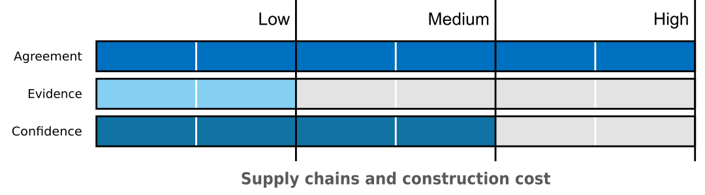
Based on the Productivity Commission (2012)’s housing affordability inquiry, between 2002 and 2009 the changes in material costs for a standard home have increased 20 percent in real terms. Half of that increase in costs was due to the introduction of new materials. Increasing building code requirements have led to an increase in construction costs which has a direct impact on housing prices. This is consistent with other studies, such as Bassett et al. (2013), which suggest that the changes in the building codes have led to an increase in costs and have been associated with increased quality of the housing.
Johnson et al. (2018) discussed that the poor performance of the construction industry and land development sectors can partly be attributed to misguided or indifferent public policy. Accordingly, the average construction cost of an ‘average house’ has risen by 28 percent over the 2012-2017 period and by 180 percent over the period of 1997-2017.55 They argued that the development and construction sectors are small scale, low productive and prone to boom-bust cycles, and upheavals in funding and land banking. Cyclical uncertainty discourages investment technologies like pre-fabrication, long-term planning and training of apprentices. They also argued that labour shortage is a significant problem for the construction sector as during busts many firms fail and workers migrate to Australia or leave the construction sector entirely. Their arguments are based on their expert advice.
Denne et al. (2016) discussed the factors of a competitive housing market to support the NPS-UDC. Accordingly, the high costs of building reflect a number of barriers and lack of competition in some construction markets. They discuss that in a competitive market, price-taking developers seek to maximise their profits by minimising development costs. This means building up until marginal construction costs are equal to average costs. Consequently, the study suggests that large, persistent deviations from marginal construction costs indicate that building height limits are constraining development and distorting prices.
In addition to his discussion of the cost of regulation, Parker (2015) reviewed the useful housing policy instruments and suggested that the cost of building has increased. He named a few reasons for the higher construction costs, including the need to build in progressively more difficult sites, liability rules for the industry, heavily involvement by councils and possible market issues. Grimes (2007) modelled the determinants of new housing supply. Accordingly, a 1 percent increase in land prices is associated with an increase of 0.33 percent in total development costs, which leads to 0.37 percent decrease in housing supply.
Samarasinghe (2014) studied the nature of the material supply chain in the New Zealand residential construction sector. He conducted 30 interviews across the supply chain in the Auckland region. His results suggest that the construction industry uses traditional procurement strategies and that the material supply chain management process is sub-optimal. His results show that the price of building material in New Zealand is high, products are inferior, houses are very customised, transport costs are high, and labour costs are high. He suggests increasing the standardisation of residential building as a solution. He also suggests a web-based building materials information system can improve collaboration in the supply chain. The results of this study are based on the interviews conducted and provide limited robust evidence for improvement of the supply chain.
Skidmore (2014) compared New Zealand housing trends and policies with those of the US. The author notes that the construction firms in New Zealand tend to be small because of land use regulations which constrict the ability for large scale land acquisition. The approval process for large scale development makes approval length and variable and uncertain, with significant delays due to various factors including local government approvals can lead to significant financial stress and even bankruptcy. This uncertainty and scale of upfront costs can make it difficult for construction companies to grow. This study is not evidence-based.
As discussed by Brebner (2014), the building Act of 1991 may have slowed construction and added costs to homeowners. The small size of construction firms, lack of innovation and desire for bespoke homes in New Zealand has not helped house prices. The author also discusses that the size of the building industry in New Zealand is small, with 45 percent of the builders being self-employed in 2010. They suggest that innovative construction methods, such as building modular units, as a good solution for improving the efficiency of the building sector.
Grimes & Aitken (2004) studied the impact of a range of factors on house prices using a macroeconomic model. Accordingly, the real construction costs have an asymmetric effect, being significant in buoyant times but not in depressed times. This may suggest that with the improved regulatory framework, and a more elastic land supply, there will be limits on the availability of inputs for the constructions sector to supply more housing.
Figure 25 shows the growth in the construction costs over the 1995Q2-2020Q4 period. During this period the cost of construction grew by 39 percent, and the housing prices increased by 124 percent.
Figure 25 Construction costs % change, PPI – Residential building construction
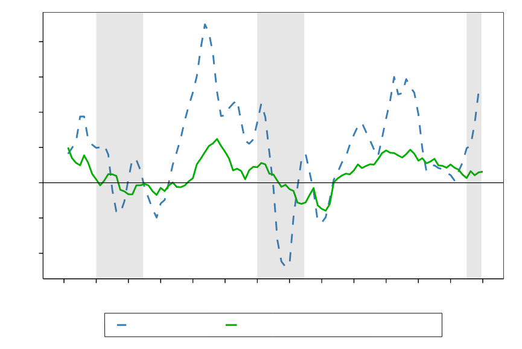
Source: Statistics New Zealand, Bank for International Settlements, Principal Economics 2021 analysis.
Note: We source s.a. real property price index from The Bank of International Settlements, PPI for residential building construction from Statistics NZ and adjust for inflation using the CPI from Statistics NZ. We then calculate the year-on-year annual change for each series. We highlight notable recessionary periods in New Zealand identified by (Reddell et al., 2008). These include the First Oil Price Shock (1974 – 1977), The Second Oil Price Shock (1979 – 1982), The 91 – 92 Recession, (attributable to the 1987 share market crash, subsequent monetary responses and impacts of the first Gulf War - 1991 – 1992), The Asian Crisis and drought (1997 – 1999), we add COVID-19 as an additional recessionary period (2020-).
3 Impact of the factors of demand
Compared to the factors of housing supply, the studies of the factors of housing demand in New Zealand have been limited.56 This is partly because the factors of housing demand have wider economic impacts, beyond the housing market. For example, a change in interest rate affects all other economic activities, as well as the housing market. Given the wide impact of the factors of demand, reaching causal inference about their impact is technically difficult.
Demand for housing depends on a range of factors, including affordability limit, location of jobs and preferences. The policy instruments that affect the factors of demand mostly affect a household’s serviceability limit, which has wider distributional effects on different income groups and different type of borrowers (first home buyers, owner-occupiers and investors). We review the factor of demand in different sections of this section.
The factors of demand, particularly income and population growth, are the drivers of both higher house prices and economic growth. A higher demand can be associated with a higher housing supply and lead to economic growth. If demand is not met by supply, then it is possible to either dampen the demand using macroprudential policy (to avoid higher HPG) or to allow the market to clear – i.e. let the house prices to increase until nobody can afford to pay a higher price. The latter solution is associated with increased inequality and negative economic and social outcomes.
In the short term, HPG can be controlled using monetary and macroprudential policies. This comes at a cost to some community groups and eventually a loss to the economy. Also, as discussed in the literature, and based on Macroeconomics theory, macroprudential policies take time to affect the market. In the case of multiple macroprudential policies, and with rapid changes in the economy, there is a risk that the lag associated with policies leads to unintended outcomes, such as dampening impacts on the construction sector and the economy.
3.1 Affordability
Description
Affordability is a complex notion. In many studies, housing affordability is considered as an output, driven by factors of demand and supply. Since the focus of our review is on HPG, we need to clarify the difference between HPG and affordability. A higher affordability level is usually associated with higher house prices, leading to HPG. Therefore, we consider affordability as an input to HPG.57
Summary of literature review
A wide range of studies use some indicators as measures of housing affordability. Most common measures of housing affordability are house prices as a ratio of income and rental yields. These indicators provide useful high-level description of the housing affordability issue that can be used for a general policy discussion. However, given their simplicity, these indicators are not useful for providing information about the drivers of housing affordability. Any use of these indicators simple trackable policy target needs to be with care – particularly because the distributional impacts of housing policies and their impacts on different income groups are not captured using these measures.
Uncertainty assessment: Households’ higher mortgage serviceability has led to increase in house prices.
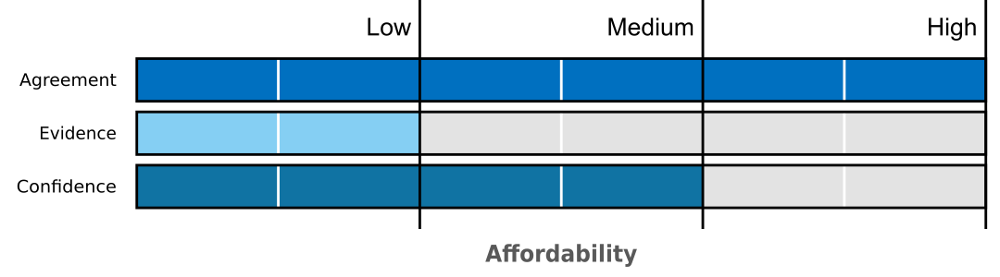
Comparisons between house prices and household income has often been used as a measure of housing affordability. Figure 26 shows the growth in household income and house prices for the 1971-2021 period. Accordingly, house prices outpaced household income growth significantly after the 1991-1992 recession.
Figure 26 Real household income Period: 1971-2021; (1971=100)
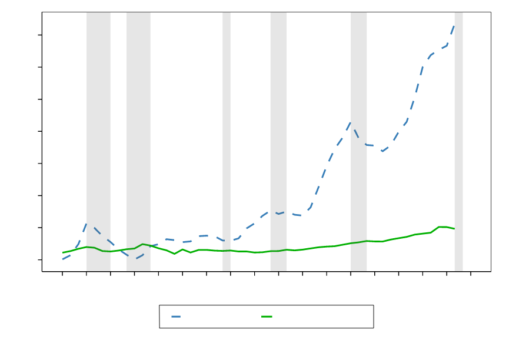
Source: Bank for International Settlements, Statistics NZ, Principal Economics analysis.
Note: We source s.a. real property price index from The Bank of International Settlements. Real household income is sourced from Data 1850 up to 2017 with additional years sourced from the Statistics NZ Household Labour Force Survey adjusted for inflation using the CPI from Statistics NZ and indexed to match the historical series. We annualised real house prices based on the average quarterly index value to match our real income data. We rebase all figures to 1971 = 100. We highlight notable recessionary periods in New Zealand identified by Reddell et al., (2008). These include the First Oil Price Shock (1974 – 1977), The Second Oil Price Shock (1979 – 1982), The 91 – 92 Recession, (attributable to the 1987 share market crash, subsequent monetary responses and impacts of the first Gulf War - 1991 – 1992), The Asian Crisis and drought (1997 – 1999), we add COVID-19 as an additional recessionary period (2020-).
Robinson et al. (2006) discussed the concept of affordability and used descriptive statistics of a range of measures to examine trends in affordability over time. Their results suggest no long-term trend and the existence of a cycle. They refer to other studies’ use benchmarks for housing affordability, e.g., some studies consider any proportion over 30 percent of total income allocated to housing costs as unaffordable (Bull, 2003), while others consider a house price to household income ratio of over 5.1 as unaffordable (Urban Reform Institute, 2021). Robinson et al. conclude that “using some sort of normative basis for definition and measurement is inevitable for any analysis into housing affordability.”58 We suggest that for a robust discussion of housing affordability, it is important to have a better understanding of the information contained in housing affordability measures.
Grimes & Aitken (2006) studied the impact of demand factors on house prices. They use a multivariate panel structure to estimate the long-run and short-run impacts on house prices. Their results suggest that a 1 percent increase in real incomes raises real house prices by a minimum of 0.25 percent. This provides an understanding of the impact of household income on household affordability and how that affects HPG.
Torshizian & Meade (2020) estimated the price elasticity of housing, utility, food and petrol across New Zealand regions, using Almost Ideal Demand System (AIDS).59 Their results suggest that the expenditure elasticity of housing is 2.1, 1.9 and 1.8 for large, medium and small urban areas, respectively. This result suggests that housing is considered a luxury product that, with increases in its price, the share of extra consumption expenditure on it raises. The result of this study is consistent with the findings of Khaled (2005), who estimated the expenditure elasticity of housing being equal to 1.6.
The factors of affordability include mortgage rates, household income level, the required deposit ratio (loan to value ratio), the mortgage term, and their wealth levels. To understand the impact of each of these factors, a model of housing affordability needs to use them in conjunction with the number of households and the available stock of housing. In the following sections, we discuss the other factors of housing affordability.
3.2 Monetary policy and mortgage rates
Description
The Reserve Bank of New Zealand’s (RBNZ) tools with an impact on house prices consists of the Official Cash Rate (OCR) and macro-prudential policy.60 The OCR affects HPG through its impact on mortgage rates. The common macro-prudential policies include deposit ratio and debt to income ratio. In the short term, housing supply is fixed (because of the lag between the increase in demand and the response from developers) and the main policy instrument for affecting house prices is the monetary and macroprudential policies.
Summary of the literature review
A lower mortgage rate leads to higher serviceability limits. In the long-term61, if the number of supplied houses is limited, then an increase in the serviceability limit leads to an increase in house prices. It is also clear that the macro-prudential policies affect HPG, however, the distributional impacts of macro-prudential policies have not been discussed in the literature.
The record low mortgage rates post-GFC have led to increased house prices. The OCR, however, has a wide impact on different sectors of the economy, and is not considered as an appropriate tool for controlling house prices because of the wider impacts on other economic activities. The available literature does not provide a comprehensive framework for the assessment of the relative impact of factors of HPG, and often counts lower interest rate as the reason for HPG.
The literature on macro-prudential policies is limited. This is partly because of lack of data on household wealth in New Zealand. Another reason is that the link between macroeconomic models and the models of housing market has been weak.
Uncertainty assessment: a lower mortgage rate leads to HPG.

A range of studies suggest lower interest rates result in an increase in total housing demand through increased ability to service higher debt levels. Macroprudential policies control the (deposit) requirements for having the credit and lead to a reduction in the number of people who can enter the market (Denne et al., 2016; Parker, 2015; Torshizian, 2016).
Koveshnikova (2017) studied the impact of macroeconomic factors on house prices in New Zealand. She uses residential property price data covering the 2003Q4-2017Q1 period and an Error Correction Model (ECM). Her results suggest that mortgage rates have a positive impact on house prices pre-GFC. After the GFC, a lower mortgage rate is associated with a higher house price.62 Over the whole period, a 1 percent increase in mortgage interest rate is associated with 0.02 percent lower house prices. The study investigated the impacts at regional levels and concluded that macroeconomic factors have significant distributional effects. Also, her investigation of the spill-over effects suggests that higher house prices in Auckland have immediate spill-over effects on house prices in Wellington and Hamilton.
Grimes & Aitken (2004) used a macroeconomic model to estimate the impact of macroeconomic shocks on house prices. Their results suggest that a 1 percent increase in user cost of capital, through increased interest rates, leads to decreases in real house prices by 0.8 percent. An interesting result of their study is that a change in commodity prices in a region leads to lower house prices in that area. They use an example of a forestry-oriented area (e.g. South Waikato) and explain that a decrease in forestry prices is associated with lower house prices in that area. This is driven by the lower income of households in that area and therefore lower serviceability limit for buying houses.
Fraser & McAlevey (2015)use a macroeconomic (SVAR) model63 of the New Zealand economy to investigate the impact of the factors of demand. They found a 1 percent increase in interest rates leads to a maximum fall of 1.56 percent in national house prices. The study is using a stylised model, which is limited in the number of parameters included and may not capture some of the impacts from other related factors.
The Productivity Commission (2012)’s housing affordability inquiry discusses that the easier credit conditions for housing loans and particularly deregulation in early 1990 has had an inflationary effect on housing. This can be mitigated using macroprudential policies.
Shi (2009) studies the impact of mortgage rates on house prices during the period 1999-2009. His results suggest that real fixed interest rates are positively related to the real housing price, after controlling for other economic conditions such as the effect of real rental rates, unemployment rates, and housing credit. Therefore, increases in the interest rate did not lead to lower real housing price during the 1999-2009 period. This result is consistent with Koveshnikova (2017)’s results. Shi’s results suggest that when interest rates increase, people favour fixed rates against the floating rate, particularly as floating rates are likely to move more than fixed rates, which in New Zealand has often resulted in the yield curve becoming negative. Shi et al. (2013)’s study of the impact of interest rates suggest that a 1 percent increase in the real floating-rate will increase house prices by less than 1 percent. By contrast, the same change in the real 1-year fixed rate results in house price growth by 6 percent.
Thorns (2009) investigated the impact of housing booms and changes to the affordability levels of New Zealanders in 1991 and 2008. His results suggest that during the 2002-2005 house price boom, the OCR has had limited effectiveness in moderating housing prices, as many people were on 2- to 4-year fixed rate mortgages. The slackening of demand in the latter part of 2007 and into early 2008 was in part due to the refinancing of fixed rate mortgages; thus finally the Reserve Bank strategy had an impact. This suggests the existence of a time lag for the impact of monetary policy to be felt in the housing market.
Yang & Rehm (2021) studied the relationship between house prices and speculation behaviour in Auckland.64 Their results suggest that interest rates are an important determinant of speculative activities with the use of financing. Their results demonstrate a vicious cycle of leveraged investors’ speculative behaviour increasing Auckland house prices which in turn spurs property speculation.
Murphy (2011) investigates the response to the GFC by the Australian and New Zealand financial sectors and the impact of that on the housing market. He highlights that the New Zealand policy and regulatory responses to the GFC have centred on supporting the banks and moderating the adverse consequences of a housing downturn.
As discussed above, the impact of monetary policy highly depends on the other (supply) factors. Parker (2021) provides a comprehensive (theoretical) economic framework for the assessment of the impact of a competitive land market on house prices.65 The results of his investigation of the impact of an increase in interest rates on house rents, house prices, land prices and household wellbeing (utility) are illustrated in Table 6. An increase in interest rate is associated with no change in house prices in a competitive market, lower house prices in a moderately uncompetitive market, and significantly lower house prices in extremely uncompetitive land markets.
Table 6 Direction of impact of interest rates on key variables
| Urban land market | House rents | House prices | Land prices | Household utility |
|---|---|---|---|---|
| Competitive | + + | 0 | 0 | - - |
| Initially uncompetitive* | + + | - | - | - |
| Moderately uncompetitive | + | - | - | - |
| Extremely uncompetitive | 0 | - - | - - | 0 |
Source: (Parker, 2021)
Armstrong et al. (2019) used a DiD method to test the impacts of the Loan to Value Restrictions (LVR) based on newly built dwellings (that were exempt from the LVR restrictions). Their study used unit-record property sales data, with controls for regional effects, buyer type (investor or first home buyer), and whether the purchase was financed by a mortgage. Additional control variables such as interest rates, building consents and regional net migration were used for robustness tests. Given the changes in LVR policies the authors investigate how changes have impacted house prices in each iteration. Nationally the policy changes led to a fall in house price inflation of 4.4 percentage points, with the effects being less significant in Auckland. The authors suggest that, given past and expected house price growth, buyers can revalue their existing home equity and take out new loans counteracting the impact of the restrictions. Overall, the impacts of the policy appear to depend on house price inflation, if house prices increase quickly, the effect of the restrictions disappear faster.
3.3 Population and migration
Description
Population growth, driven by internal and external migration in addition to the birth and death rates, increases demand for housing and leads to HPG, when the housing supply is inelastic (and in the short term).
Summary of the literature
The pull and push factors of migration include the attractiveness of the job market, the availability of amenities and facilities and the cost of living – which is highly interrelated with housing costs. This cycle in factors of migration and house price growth leads to complexities in causal inference about the impact of population growth on house prices. This has been reflected in our summary of the estimated impact of increases in population on house prices (ranging between 0.02 and 12 percent).
Uncertainty assessment: Strong migration has led to HPG.
Badcock (2004) discussed the impact of the deregulation of New Zealand’s finance sector in the mid-1980s, suggesting that the Government was taken a little by surprise at the size of the net migration ‘spike’ in the 12 months to August 2003 (caused by a combination of short-stay foreign students and fewer New Zealanders leaving for overseas). Because the supply response is always lagged in the property development and home building sector, pent up demand pushed up house prices.
PCE (2019) refers to different factors of demand and highlights that the (per capita) net migration to New Zealand during 2000 and 2019 was around 3 times higher than comparable developed countries. Koveshnikova (2017) studied the impact of macroeconomic factors on house prices in New Zealand. Her results suggest that, over the period of their study, a 1 percent increase in population is associated with 0.22 percent increase in house prices.
Johnson et al (2018) reviewed the factors of house prices in New Zealand. They discussed that an increase in net migration leads to a higher housing demand but if supply is responsive this will not affect house prices.
Coleman & Landon-Lane (2007) studied the link between migration and New Zealand housing market using structural vector autoregressive (VAR) models at the national level. Their results suggest that a 1 percent migration flow is associated with a price increase of between 8 and 12 percent.
Stillman & Maré (2008) assessed the impact of migration inflow on house prices between 1986 and 2006. After controlling for observable differences in the socio-demographic characteristics of areas, they found no evidence that a higher share of new (international) immigrants in an area is associated with higher house prices. Their results suggest that a 1 percent increase in an area’s population is associated with a 0.2 to 0.5 percent increase in local housing prices. Higher inflows of returning Kiwis associated with a 6 to 9 percent increase in house prices.
Maré et al (2009) studied the impact of increases in employment on house prices. They used a VAR model on a panel of regions across New Zealand. Their results suggest a significant 6 percent increase in prices in response to a 1 percent increase in employment. However, their result at the regional level is not significant.66 (Ge, 2009) investigated the determinants of house prices in New Zealand between 1980 and 2007. Her results suggest that a 1 percent increase in net migration is associated with approximated 10 percent increase in house prices.
Chanpiwat (2013) examined the response of New Zealand housing markets to immigration shocks. He used migration and census data between 1996 and 2011. His results suggest that a 1 percent increase in external migration raised house prices by 7.5 percent (at a national level).
McDonald (2013) assessed the impact of migration on house prices in New Zealand. His results suggest that a 1 percent population growth is associated with an 8 percent increase in house price over the following three years and an additional house is built for every 6 migrants. An interesting result is that a 1000-person increase in monthly arrivals raises real house prices by 4 percent, whereas a 1000-person fall in monthly departures increases real house prices by only 2 percent.
Hyslop et al. (2019) studied the impact of population on house prices. They used New Zealand data for the 1986-2019 period. Their results suggest that a 1 percent increase in population raises house prices by 4 to 6.5 percent. They result shows that an increase in arrival of international migrants in an area does not affect house prices significantly. Their results also suggest that the housing demand in long-term is inelastic (their estimated price elasticity of demand is equal to -0.3).
Nunns (2019) studied the socioeconomic impacts of the rising house prices in New Zealand.67 His results suggest that a 1 percent increase in regional population leads to an increase in local house prices by a factor of between 1.6 to 2.7 percent (and is associated with increases in local rents by a factor of between 1.5 and 2.1 percent). Nunns argues that in a perfectly mobile labour market, reducing land distortions to zero leads to an increase of the output per worker by 0.9 percent, which raises New Zealand GDP by up to 7.7 percent. His results for a scenario that excludes trans-Tasman migration and focuses on redistribution of labour across New Zealand regions, suggests that reducing land distortions to zero leads to an increase in the output per worker by 0.8 percent and leads to a similar size (0.8 percent) increase in GDP. Further investigation of the channels of impact and the potential reasons for the estimated significant effects on GDP will be required for improved understanding of the GDP impacts of lower land distortions through improved labour outputs resulted from migration policies.
Table 7 Price response to a 1 percent increase in population
| Study | Price elasticity (%) | Data coverage |
|---|---|---|
| Coleman and Landon-Lane 2007 | 8-12 | 1962-1982; 1991-2006 |
| Stillman and Maré 2008 | 0.2-0.5 | Census and Quotable Value New Zealand and rent data 1986-2006 |
| Maré, Grimes, and Morten 2009 | 6 | Household Labour Force Survey (HLFS) 1989-2006 |
| Chanpiwat, 2013 | 7.5 | Migration and census data 1996-2011 |
| McDonald 2013 | 10 | 1990-2013 |
| Koveshnikova, 2017 | 0.022 (short term – 3 months) | 2003-2017 |
| Hyslop et al., 2019 | 4-6.5 | Census 1986-2013 |
| Nunns 2019 | 1.6-2.7 | regional wages, employment, and house prices 2000-2016 |
Source: Principal Economics, 2021
Figure 27 shows the net Permanent and Long Term (PLT) arrivals over the 1983 - 2018 period. Accordingly, the number of arrivals increased during the boom periods with average quarterly permanent long-term migration averaging 10,395 over the 2011-2018 period, compared to an average of 1,500 people over the earlier period of 1983 - 2010.
Figure 27 Net migration and HPG
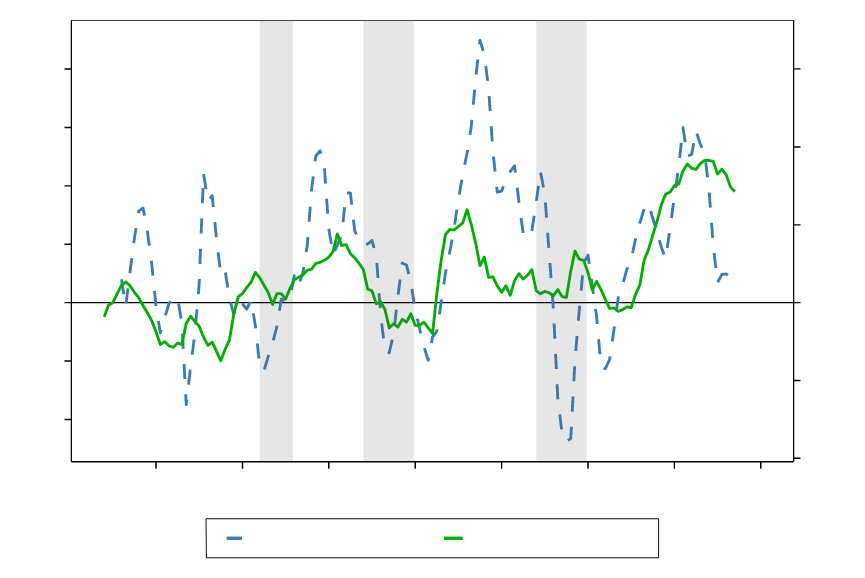
Source: Bank for International Settlements, Statistics NZ, Principal Economics analysis.
Note: We source s.a. real property price index from The Bank of International Settlements and Net permanent and long-term arrivals from Statistics NZ. We calculate year-on-year annual percentage growth for the real property price index to determine house price inflation. Permanent and long-term’ departures and net migration are unavailable from November 2018, because of the removal of the departure card. We have omitted estimates for migration post November 2018 given the significant differences in measurement. We highlight notable recessionary periods in New Zealand identified by Reddell et al., (2008). These include the First Oil Price Shock (1974 – 1977), The Second Oil Price Shock (1979 – 1982), The 91 – 92 Recession, (attributable to the 1987 share market crash, subsequent monetary responses and impacts of the first Gulf War - 1991 – 1992), The Asian Crisis and drought (1997 – 1999), we add COVID-19 as an additional recessionary period (2020-).
3.4 Household size
Description
The number of dwellings required for accommodating the population depends on the size of households and the acceptable level of household crowding.68 This has been reflected in the price of houses. Some preferences for size (and other features) of housing may not be captured in prices. A policy targeting the wellbeing of New Zealand population, needs to account for the potential unrevealed preferences of population for the housing outcomes.
Summary of literature review
The literature refers to the decrease in the size of households and the move towards smaller dwellings. It is not clear if the zoning regulations have accounted for the changes in preferences and composition of households over time and allow for the right size of the new dwellings in the plans. A mismatch between demand and supply may lead to higher house prices.
Uncertainty assessment: A decrease in the size of households leads to higher house prices when the supply is inelastic.

The Productivity Commission’s (2012) housing affordability inquiry suggests that changes to demographic and family structures have led to changes in household formation and changes in housing affordability. Denne et al. (2016) refer to the impact of household formation on the demand side of housing, and highlight the importance of the changing demographic on house prices.
Gaynor (1999, cited in Badcock, 2004) highlighted the role of household size in the number of dwellings required for accommodating households. Badcock (2004) suggested that, with a drop in the average size of New Zealand households from 3 in 1981 to 2.7 in 2001, there is a need for 150,000 additional dwellings (this is probably based on an assumption of a population of 4 million).
Stats NZ (2020) described the changes in households and housing in New Zealand using Stats NZ data. Based on Stats NZ projections, the household size is expected to decrease from 2.6 in 2013 to 2.5 in 2038. This reflects the increases in the number of one-person households. In addition to the changes in households’ size, the composition and features of households are changing too. The size of houses in New Zealand has increase from 135 sqm in 1991 to 200 sqm in 2010. Stats NZ suggest that, with the decreases in the size of households, the demand for larger properties, with more bedrooms, may decrease in the future.
Morrison & Torshizian (2017) discussed the role of demographics, and the way housing space consumption responds to local housing market characteristics. Using Census data from 1991 to 2013, they show that the number of people per dwelling has increased in dense areas of Auckland. Anecdotally, they discuss that with the rising housing costs a lot of parents are now providing housing within their own home to their own adult children. Their study is a descriptive study and does not account for the impact of other relevant factors.
Torshizian (2017) studied the impact of household crowding and population density on residential satisfaction. After accounting for a wide range of factors, his results suggest that household crowding’s impact on residents’ satisfaction is affected by their social norms. Torshizian discusses that house prices do not hold information about unrevealed preferences. Therefore, a policy that aims to improve wellbeing of New Zealand population, needs to investigate the housing features that New Zealand residents will value most, including the level of crowding, and plan for providing houses with those features.
3.5 Availability of finance
The availability of capital in the market and its impact on housing prices has been discussed in a very few studies. The availability of finance is associated with speculative purchases and house price bubbles. Our review of the available literature does not provide us with robust understanding of the impact of availability of finance in New Zealand.
Uncertainty assessment: high access to finances has led to increases in house prices due to lack of supply responsiveness.
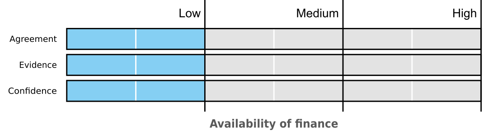
Badcock (2004) discussed the impact of the deregulation of New Zealand’s finance sector in the mid-1980s. Accordingly, with better access of New Zealand banks to overseas credit, residential mortgage lending jumped from 13.6 to 42.8 percent of total bank lending between 1984 and 1999. In the year ending 30 September 2003, 99.2 percent of total new lending was on housing loans – and only 0.8 percent for all other areas, such as transport, tourism and agriculture.
Greenaway-Mcgrevy & Phillips (2016) investigated the existence of a house price bubble in Auckland using house price data for 72 territorial authorities across New Zealand between 1993 and 2014. To identify the periods of house price bubble, they used measures of price to rent and price to income ratios.69 Their results suggest that there was a housing bubble in Auckland between 2003 and 2008 and the latest bubble has started since 2013 and had not collapsed until the end of their data in December 2014.
Murphy (2011) discusses the impact of the GFC on the Australian and New Zealand housing markets. He mentioned banks’ lack of access to international funds as one of the challenges that altered the New Zealand mortgage market.
Bassett et al. (2013) discussed the housing affordability problem in New Zealand looking at descriptive statistics since early 1990s. They highlighted that the investment in housing has risen at the expense of investment in other sectors of the economy. This is consistent with Badcock (2014). NZIER (2014a) discusses that increased household indebtedness has at least partly contributed to increasing price of houses.
3.6 Tax policy, housing subsidies and other interventions
Description
Taxes are considered as a solution to decrease speculative behaviour and to raise funds for infrastructure investments. There is a range of tax policies, including development contributions, financial contributions, and betterment taxes. Both taxes and subsidies (depending on their type) are associated with distributional effects across different income groups, types of buyers, and regions.
Summary of the literature
The available literature does not provide enough evidence-based analysis of the likely impact of the tax and subsidy policies. This is partly due to confidentiality of data and partly because of political complexities involved in a tax policy. Generally, there is high agreement that a tax policy leads to lower speculation incentives and therefore lower HPG. The size of the impact of a tax policy on HPG is unclear.
Uncertainty assessment: A betterment tax leads to lower house prices.

Yang & Rehm (2021) studied the relationship between house prices and speculation behaviour in Auckland.70 Their results demonstrate a vicious cycle of leveraged investors’ speculative behaviour increasing Auckland house prices which in turn spurs property speculation.
Grimes & Coleman (2009) discuss that a betterment tax can be used for funding public infrastructure under certain circumstances. They use a theoretical framework and show that the full costs of a new infrastructure investment can be funded using an incremental land tax that only taxes the uplift in the values caused by the infrastructure investment. That study does not provide data analysis in support of the theory. In practice, using any type of land tax for funding infrastructure is difficult due to political sensitivities.
Bassett et al. (2013) reviewed New Zealand’s housing affordability problem and the development of housing in New Zealand since the early 1900s. They note that in June 2003 nearly 252,000 people receive some form of housing supplement. However, the effects of this subsidy are noted as having little effect to the adding to the housing stock with its impacts being absorbed into rental prices.
Price (2014) finds that house price inflation is 3.3 percent lower than it could have been following the introduction of LVR restrictions as at March 2014. The author uses seasonally adjusted monthly data from January 1992 to April 2013 to construct a model of the counterfactual to determine these results. Variables used include net migration (disaggregated by New Zealand and non-New Zealand citizens), net experienced domestic trading activity, two-year fixed mortgage rates, number of house sales, median days to sell a house, residential consent issuance, REINZ stratified house price index and household credit. The counterfactual is constructed as a forecast starting in September 2013.
Armstrong et al. (2019) used a DiD71 method to test the impacts of the Loan to Value Restrictions (LVR) based on newly built dwellings (that were exempt from the LVR restrictions). They assessed the impact of the “Bright-Line” tax72 and residential property investment loans being given a separate asset class with higher capital requirements, which were introduced in November 2015. Their results suggest that the impact of the “Bright-Line” Tax was not significant in Auckland. They suggest that the reason for no impact from the “Bright-Line” Tax was that Auckland investors have enough housing equity, which allows them to obtain leverage on their existing houses to finance new purchases.
The New Zealand Tax Working Group recommended a broad extension of taxation of capital gains. This included all types of land and improvements (excluding the family home), shares, intangible property, and business assets New Zealand Tax Working Group (2019). Specific to housing, the group recommended that consideration for tax on vacant residential land best levied as local taxes. The Tax Working Group report does not provide evidence on the impact of the capital gain tax on the housing market and the rest of the economy. The proposed capital gain tax was rejected by the Government and New Zealand remains without a comprehensive capital gains tax, and with no prospect of one in the near future.
4 Discussion and future research
In our review, we assessed the impact of a wide range of factors on HPG. We summarise our findings from the literature in Table 8. In our review, we highlighted the shortcomings of the literature and the importance for policy driven robust economic analysis of the factors of HPG. To achieve this, it is required to have a clear definition of policy objectives, for example to maximise the wellbeing of New Zealanders, and a clear recognition of the associated economywide trade-offs. It is also critical to have a comprehensive economic assessment framework accounting for inter-relationships between the factors of demand and supply, and the urban development, environmental and economywide outcomes.
Table 8 Summary of literature review
| Factors | Summary of review |
|---|---|
| Regulations | The cost imposed from regulation on house prices is significant and has increased over time. This suggests that the restrictive planning regulations have led to HPG. Lack of evidence on the impact of other factors on the relationship between regulation and HPG. |
| RMA and environmental regulation | The evidence on the extent to which RMA has contributed to HPG is weak. The interaction between the environmental regulation and other legislations (and infrastructure planning) needs further investigation |
| Availability of infrastructure | The lack of infrastructure is a significant barrier to housing supply. Potential drivers of lack of infrastructure are funding and financing issues and the potential inefficiency of the local government. There is agreement on the need for further alignment between legislations, particularly between the RM system and infrastructure planning. The evidence is limited – particularly there is limited evidence available on the efficient use of the available infrastructure. |
| Supply chains and construction costs | The increases in building code requirements have led to higher construction costs, which has led to HPG. There is a lack of robust conversation about the interactions between construction costs and all other related factors, such as changes in technology, the impact of planning regulations and the scale of the construction sector. |
| Affordability | Overall increase affordability has led to HPG. These indicators of housing affordability provide useful high-level description of the housing affordability issue that can be used for a general policy discussion. The indicators are not useful for providing information about the drivers of housing affordability. House prices outpaced household income growth significantly after the 1991-1992 recession. |
| Monetary policy and mortgage rates | A lower OCR has led to higher housing affordability and HPG. The OCR, however, has a wide impact on different sectors of the economy, and is not considered as an appropriate tool for controlling house prices. The impact of monetary policy highly depends on the other (supply) factors. The macroeconomic models and the models of housing market have not been linked. |
| Population and migration | Population growth, driven by internal and external migration in addition to the birth and death rates, increases demand for housing and leads to HPG. The cycle in factors of migration and house price growth leads to complexities in causal inference about the impact of population growth on house prices. |
| Household size | The decrease in the size of households and the move towards smaller dwellings has led to an increase in housing demand, and therefore HPG. It is not clear if the zoning regulations have accounted for the changes in preferences and composition of households over time and allow for the right size of the new dwellings in the plans. A mismatch between demand and supply may lead to higher house prices. |
| Availability of finance | Our review of the available literature does not provide us with robust understanding of the impact of availability of finance in New Zealand. |
| Tax policy, housing subsidies and other interventions | There is high agreement that a tax policy leads to lower speculation incentives and therefore lower HPG. The available literature does not provide enough evidence-based analysis of the likely impact of the tax and subsidy policies. The size of the impact of a tax policy on HPG is unclear. |
Source: Principal Economics.
For our review of the available housing models in New Zealand, we contacted the Reserve Bank, the Treasury and the Ministry of Housing and Urban Development (HUD) and asked about their available models. Our review of the information available to us suggests that the available models do not provide any extensive tool for forecasting house prices in New Zealand. Particularly, house prices are mostly an input to the rest of macroeconomic models used by the RBNZ and the Treasury. Both entities used expert judgement (outside the modelling framework) to provide forecasts of house prices. We did not find any information about the performance of the combined models and expert judgement over time. The available tools are not suitable for the assessment of housing policies. We are not sure if the available tools provide a robust framework for the assessment of macroprudential policies. For a policy targeting the wellbeing of New Zealand population, it is critical to assess the distributional impacts of policies. Our review suggests that the available tools do not provide information about distributional impacts of policies.
Policies often aim at improving a housing affordability measure (as their policy target). Housing affordability measures, however, do not provide information on the concept of housing affordability for different types of people. All current measures of housing affordability are flawed both conceptually and empirically (see for example Leishman & Rowley, 2012; Stone, 2006). This leads to incorrect policy analyses especially for people who are not the archetypal pakeha couple with kids. For a robust discussion of housing affordability, we suggest a future study to investigate performance of housing affordability measures versus different population groups’ perception of housing affordability and provides a better housing affordability measure for research and policy.
5 References
Albouy, D. (2009). What are Cities Worth? Land Rents, Local Productivity, and the Capitalization of Amenity Values. National Bureau of Economic Research.
ANZ Research. (2020). New Zealand Property Focus December 2020: Housing affordability—Unlocking the solution. https://www.anz.co.nz/content/dam/anzconz/documents/economics-and-market-research/2020/ANZ-PropertyFocus-20201215.pdf
Armstrong, J., Skilling, H., & Yao, F. (2019). Loan-to-value ratio restrictions and house prices: Micro evidence from New Zealand. Journal of Housing Economics, 44, 88–98. https://doi.org/10.1016/j.jhe.2019.02.002
Badcock, B. (2004). Global exposure and Auckland’s housing market1. Urban Policy and Research, 22(1), 59–68. https://doi.org/10.1080/0811114042000185491
Bassett, M. and Malpass, L. (2013). Priced out: How New Zealand lost its housing affordability. The New Zealand Initiative. http://nzinitiative.org.nz/site/nzinitiative/files/publications/PRICED%20OUT%20-%20FULL%20RES.pdf
BERL. (2016). Business land availability and assessment methodologies. A report for the Ministry of Business, Innovation and Employment and the Ministry for the Environment.
Bertaud, A. (2014). Markets, urban planning planning and local democracy.
Brebner, M. (2014). Auckland’s Housing Affordability Problem. 35.
Bull, G. (2003). § Housing Choice.
Cavalleri, M. C., Cournède, B., Özsöğüt, E., & OECD. (2019). How responsive are housing markets in the OECD? National level estimates (OECD Economics Department Working Papers No. 1589; OECD Economics Department Working Papers, Vol. 1589). https://doi.org/10.1787/4777e29a-en
Chanpiwat, N. (2013). Estimating the impact of immigration on housing prices and housing affordability in New Zealand. 38.
Coleman, A., & Grimes, A. (2009). Fiscal, Distributional and Efficiency Impacts of Land and Property Taxes.
Coleman, A., & Landon-Lane, J. (2007). Housing Markets and Migration in New Zealand, 1962-2006. 62.
Cooper, G. C. K., & Namit, K. (2021). City with a billion dollar view. New Zealand Economic Papers, 55(1), 19–37. https://doi.org/10.1080/00779954.2018.1509110
Denne, T., Nunns, P., Wright, L., and Donovan, P. (2016). Signals of Under-Capacity: The practicalities of monitoring Price Signals under the National Policy Statement on Urban Development Capacity. Covec Ltd.
Fernandez, M. A. Better together?: Wetlands, parks and housing prices in Auckland. Auckland Council Technical Report 2020/025.
Fraser, P., & McAlevey, L. (2015). New Zealand regional house prices and macroeconomic shocks. Journal of Property Research, 32(4), 279–300. https://doi.org/10.1080/09599916.2015.1083606
Ge, X. J. (2009). Determinants of House Prices in New Zealand. Pacific Rim Property Research Journal, 15(1), 90–121. https://doi.org/10.1080/14445921.2009.1110427
Glaeser, E. L., & Gyourko, J. (2003). The Impact of Building Restrictions on Housing Affordability.
Greenaway-McGrevy, R. (2018). Land Use Regulation, the Redevelopment Premium and House Prices.
Greenaway-Mcgrevy, R., & Phillips, P. C. B. (2016). Hot property in New Zealand: Empirical evidence of housing bubbles in the metropolitan centres.
Grimes, A. (2007). Impacts of Land Availability, Housing Supply and Planning Infrastructure on New Zealand House Prices. 36.
Grimes, A. (2015). Understanding Housing Affordability.pdf.
Grimes, A., & Aitken, A. (2004). What’s the Beef with House Prices? Economic Shocks and Local Housing Markets. 29.
Grimes, A., & Aitken, A. (2006). Housing Supply, Land Costs and Price Adjustment: Housing Supply, Land Costs and Price Adjustment. Real Estate Economics, 38(2), 325–353. https://doi.org/10.1111/j.1540-6229.2010.00269.x
Grimes, A., & Liang, Y. (2009). Spatial Determinants of Land Prices: Does Auckland’s Metropolitan Urban Limit Have an Effect? Applied Spatial Analysis and Policy, 2(1), 23–45. https://doi.org/10.1007/s12061-008-9010-8
Grimes, A., & Mitchell, I. (2015). Impacts of Planning Rules, Regulations, Uncertainty and Delay on Residential Property Development. SSRN Electronic Journal. https://doi.org/10.2139/ssrn.2552938
Hyslop, D. R., Le, T., Maré, D., and Stillman, S. (2019). Housing markets and migration – Evidence from New Zealand. 45. Motu Working Paper 19-14.
IPCC. (2010). Guidance Note for Lead Authors of the IPCC Fifth Assessment Report on Consistent Treatment of Uncertainties. https://www.ipcc.ch/site/assets/uploads/2017/08/AR5_Uncertainty_Guidance_Note.pdf
Johnson, A., Howden-Chapman, P., & Eaqub, S. (2018). A stocktake of New Zealand’s housing. https://www.beehive.govt.nz/sites/default/files/2018-02/A%20Stocktake%20Of%20New%20Zealand%27s%20Housing.pdf
Kallergis, A., Angel, S., Liu, Y., Blei, A. M., Sanchez, N. G., & Lamson-Hall, P. (2018). Housing Affordability in a Global Perspective. 50.
Khaled, M., & NZIER. (2005). New Zealand’s love affair with houses and cars. https://nzier.org.nz/static/media/filer_public/cc/f7/ccf74121-46a9-4427-a02e-06e8d8363055/nztc_no_41.pdf
Koveshnikova, O. (2017). Determinants and Dynamics of New Zealand Housing Prices: National- and Regional- Level Analyses. 68.
Lees, K. (2017). Quantifying the impact of land use regulation: Evidence from New Zealand » The Hub. Sense Partners, Report for Superu, Ministerial Social Sector Research Fund. https://thehub.swa.govt.nz/resources/quantifying-the-impact-of-land-use-regulation-evidence-from-new-zealand-2/
Lees, K. (2019). Quantifying the costs of land use regulation: Evidence from New Zealand. New Zealand Economic Papers, 53(3), 245–269. https://doi.org/10.1080/00779954.2018.1473470
Maré, D. C., Grimes, A., & Morten, M. (2009). Adjustment in local labour and housing markets.
Martin, S. L., & Norman, D. S. (2020). Does the Rural Urban Boundary impose a price premium on land inside it?
Mayer, C. J., & Somerville, C. T. (2000). Land use regulation and new construction. Regional Science and Urban Economics, 30(6), 639–662. https://doi.org/10.1016/S0166-0462(00)00055-7
MBIE, & MfE. (2017). National Policy Statement on Urban Development Capacity—Price efficiency indicators technical report: Rural-urban differentials. 75.
McDonald, C., & RBNZ. (2013). Migration and the housing market. 20.
McEwan, E. (2018). Will it Really Improve Housing Affordability in New Zealand? 209, 7.
Ministry for Environment, 2020. Reforming the resource management system: Cabinet paper. Retrieved from: cabinet-paper-reforming-the-resource-management-system_1.pdf (mfe.govt.nz)
Morrison, P., & Torshizian, E. (2017). Demographics and the compact city. Presented to NZ Association of Economists conference, Wellington, July.
MRCagney, Covec, & Beca. (2016). Cost benefit analysis of policy options for a National Policy Statement on Urban Development.
Murphy, L. (2011). The global financial crisis and the Australian and New Zealand housing markets. Journal of Housing and the Built Environment, 26(3), 335–351. https://doi.org/10.1007/s10901-011-9226-9
Murphy, L. (2014). ‘Houston, we’ve got a problem’: The Political Construction of a Housing Affordability Metric in New Zealand. Housing Studies, 29(7), 893–909. https://doi.org/10.1080/02673037.2014.915291
New Zealand Tax Working Group. (2019). Future of tax: Final report.
Norman, D., & Martin, S. (2021). Low density housing close to city centre. 15.
Norman, D., Martin, S., & Auckland Council Chief Economist Unit. (2021). Please, Sir, I want some more. 7.
Nunns, P. (2019). The causes and economic consequences of rising regional housing prices in New Zealand. New Zealand Economic Papers, 55(1), 66–104. https://doi.org/10.1080/00779954.2020.1791939
Nunns, P. (2021). The causes and economic consequences of rising regional housing prices in New Zealand. NZ Economic Papers, 55(1), 66–104. https://doi.org/10.1080/00779954.2020.1791939
NZIER. (2014). Big city life? Challenges and trade-offs for Auckland city.
NZIER. (2014a). The home affordability challenge.
Parker, C. (2015). Housing supply, choice and affordability: Trends, economic drivers, and possible policy interventions.
Parker, C. (2021). AMM modelling of uncompetitive urban land markets.
PCE. (2019). Submission on the proposed National Policy Statements on Urban Development and Highly Productive Land.
Price, G. (2014). How has the LVR restriction affected the housing market: A counterfactual analysis. Reserve Bank of New Zealand Analytical Note Series, 20.
Principal Economics. (2021). Economic Impact of Efficient Infrastructure Decisions.
Productivity Commission. (2012). Housing affordability inquiry: March 2012.
Productivity Commission. (2017). Better urban planning: Final report.
PwC. (2020). Cost—Benefit analysis for a National Policy Statement on Urban Development. https://environment.govt.nz/assets/Publications/Files/NPS-UD-CBA-final.pdf
Reddell, M., Sleeman, C., & RBNZ. (2008). Some perspectives on past recessions. 71(2), 17.
Resource Economics, Principal Economics, & Sapere. (2021). Reforms to the Resource Management System: An analysis of expected impacts on Māori, the housing market and the natural environment (Draft Report for the Ministry for the Environment).
Robinson, M., Scobie, G. M., & Hallinan, B. (2006). Affordability of Housing: Concepts, Measurement and Evidence. 51.
Saiz, A. (2010). The Geographic Determinants of Housing Supply*. The Quarterly Journal of Economics, 125(3), 1253–1296. https://doi.org/10.1162/qjec.2010.125.3.1253
Samarasinghe, D. A. S. (2014). Building Materials Supply Chains: An Evaluative Study of the New Zealand Residential Consturction.
Schrader, B. (2012). Housing and government—State loans and state houses. Ministry for Culture and Heritage Te Manatu Taonga. https://teara.govt.nz/en/graph/32421/total-state-housing-stock
Shi, S. (2009). Monthly House Price Indices and Their Applications in New Zealand. 12.
Shi, S., Jou, J.-B., & Tripe, D. (2013). Policy Rate, Mortgage Rate and Housing Prices: Evidence from New Zealand. 51.
Skidmore, M. (2014). Housing Affordability: Lessons from the United States. 29.
Squires, G., Webber, D., Trinh, H. H., & Javed, A. (2021). The connectedness of house price affordability (HPA) and rental price affordability (RPA) measures. International Journal of Housing Markets and Analysis, ahead-of-print(ahead-of-print). https://doi.org/10.1108/IJHMA-03-2021-0029
Stats NZ. (2020). Housing in Aotearoa, 2020. https://www.stats.govt.nz/reports/housing-in-aotearoa-2020.
Stillman, S., & Maré, D. C. (2008). Housing Markets and Migration: Evidence from New Zealand.
Stroombergen, A. (2010). ’Prices and inflation—Price of labour and capita. Te Ara - the Encyclopedia of New Zealand; Ministry for Culture and Heritage Te Manatu Taonga. https://teara.govt.nz/en/graph/23100/interest-rates-1966-2008
Thorns, D. (2009). Housing booms and changes to New Zealand housing affordability: The policy challenge. Journal of Asian Public Policy, 2(2), 171–189. https://doi.org/10.1080/17516230903027914
Torshizian, E. (2015). Are We Limiting Regional Development by Imposing Planning Permissions? New Zealand Association of Economists.
Torshizian, E. (2016). Affordability Decompositions for Auckland.
Torshizian, E. (2017). Effects of Crowding, Density and Deprivation on Residential Satisfaction. 286.
Torshizian, E. (2018). Impact of urban expansions on relative land prices.
Torshizian, E., & Grimes, A. (2020). Household Crowding Measures: A Comparison and External Test of Validity. Journal of Happiness Studies, 22(4), 1925–1951. https://doi.org/10.1007/s10902-020-00302-z
Torshizian, E., & Meade, R. (2020). Estimating demand for competition analysis. 34.
Urban Reform Institute. (2021). Demographia International Housing Affordability 2021 Edition. 16.
Yang, Y., & Rehm, M. (2021). Housing prices and speculation dynamics: A study of Auckland housing market. Journal of Property Research, 1–19. https://doi.org/10.1080/09599916.2021.1873405
Zheng, G. (2013). The Effect of Auckland’s Metropolitan Urban Limit on Land Prices. 23. New Zealand Productivity Commission Research Note March 2013.
6 The list of keywords and the reviewed literature
In our search for relevant literature, we used the following keywords:
Prices, affordability, National Policy Statement, Rural urban boundary, supply elasticity, demand elasticity, supply elasticity, infrastructure, development, growth, property, stock, regulation, greenfield, Loan-to-valuation-ratio (LVR). We use these keywords alongside in conjunction with overarching keywords related to our primary topic in our literature discovery. The overarching keywords include ‘New Zealand’, ‘Auckland’, ‘National Policy Plan’, ‘housing’, ‘house’, ‘property’, ‘urban’ and ‘market(s)’.
Impacts of the factors of supply
| Author and title | Date | |
|---|---|---|
| 1 | PwC. Cost - benefit analysis for a National Policy Statement on Urban Development. | 2020 |
| 2 | ANZ Research. New Zealand Property Focus December 2020: Housing affordability - unlocking the | 2020 |
| 3 | Grimes, A. Impacts of Land Availability, Housing Supply and Planning Infrastructure on New Zealand House Prices. 36 | 2007 |
| 4 | MRCagney, Covec & Beca. Cost benefit analysis of policy options for a National Policy Statement on Urban Development. | 2016 |
| 5 | Saiz, A. The Geographic Determinants of Housing Supply*. Q. J. Econ. 125, 1253–1296 | 2010 |
| 6 | Hyslop, D. R., Le, T., Maré, D., Stillman, S. & Motu. Housing markets and migration – Evidence from New Zealand. 45 | 2019 |
| 7 | Nunns, P. The causes and economic consequences of rising regional housing prices in New Zealand. N. Z. Econ. Pap. 55, 66–104 | 2019 |
Impact of regulations
| Author and title | Date | |
|---|---|---|
| 1 | Lees, K. Quantifying the costs of land use regulation: evidence from New Zealand. N. Z. Econ. Pap. 53, 245–269 | 2019 |
| 2 | Glaeser, E. L. & Gyourko, J. The Impact of Building Restrictions on Housing Affordability. 19 | 2003 |
| 3 | Lees, K. Quantifying the impact of land use regulation: Evidence from New Zealand » The Hub. | 2017 |
| 4 | Norman, D., Martin, S. & Auckland Council Chief Economist Unit. Please, Sir, I want some more. | 2021 |
| 5 | PwC. Cost - benefit analysis for a National Policy Statement on Urban Development. | 2020 |
| 6 | MRCagney, Covec & Beca. Cost benefit analysis of policy options for a National Policy Statement on Urban Development. | 2016 |
| 7 | Cooper, G. C. K. & Namit, K. City with a billion dollar view. N. Z. Econ. Pap. 55, 19–37 | 2021 |
| 8 | Grimes, A. & Aitken, A. Housing Supply, Land Costs and Price Adjustment: Housing Supply, Land Costs and Price Adjustment. Real Estate Econ. 38, 325–353 | 2006 |
| 9 | Greenaway-McGrevy, R. Land Use Regulation, the Redevelopment Premium and House Prices. | 2018 |
| 10 | Parker, C. Housing supply, choice and affordability: Trends, economic drivers, and possible policy interventions. | 2015 |
| 11 | Bertaud, A. Markets, urban planning planning and local democracy. | 2014 |
| 12 | Grimes, A. & Mitchell, I. Impacts of Planning Rules, Regulations, Uncertainty and Delay on Residential Property Development. SSRN Electron. J. | 2015 |
| 13 | Cavalleri, M. C., Cournède, B., Özsöğüt, E. & OECD. How responsive are housing markets in the OECD? National level estimates. vol. 1589 | 2019 |
| 14 | Mayer, C. J. & Somerville, C. T. Land use regulation and new construction. Reg. Sci. Urban Econ. 30, 639–662 | 2000 |
| 15 | Productivity Commission. Housing affordability inquiry: March 2012. | 2012 |
| 16 | Parker, C. AMM modelling of uncompetitive urban land markets. | 2021 |
| 17 | Grimes, A. & Liang, Y. Spatial Determinants of Land Prices: Does Auckland’s Metropolitan Urban Limit Have an Effect? Appl. Spat. Anal. Policy 2, 23–45 | 2009 |
| 18 | MBIE & MfE. National Policy Statement on Urban Development Capacity - Price efficiency indicators technical report: Rural-urban differentials. 75 | 2017 |
| 19 | Martin, S. L. & Norman, D. S. Does the Rural Urban Boundary impose a price premium on land inside it? | 2020 |
| 20 | Zheng, G. & Productivity Comission. The Effect of Auckland’s Metropolitan Urban Limit on Land Prices. 23 | 2013 |
| 21 | Torshizian, E. Are We Limiting Regional Development by Imposing Planning Permissions? in | 2015 |
| 22 | Bassett, M., Malpass, L., & New Zealand Initiative (Organisation). Priced out: how New Zealand lost its housing affordability. | 2020 |
| 23 | Fernandez, M. A., RIMU, & Auckland Council. Better together?: wetlands, parks and housing prices in Auckland. | 2020 |
| 24 | Kallergis, A. et al. Housing Affordability in a Global Perspective. | 2018 |
| 25 | Torshizian, E. Impact of urban expansions on relative land prices. 20 | 18 |
| 26 | Norman, D. & Martin, S. Low density housing close to city centre. | 2021 |
| 27 | Saiz, A. The Geographic Determinants of Housing Supply*. Q. J. Econ. 125, 1253–1296 | 2010 |
| 28 | Nunns, P. The causes and economic consequences of rising regional housing prices in New Zealand. N. Z. Econ. Pap. 55, 66–104 | 2019 |
| 29 | Ministry for Environment, Reforming the resource management system: Cabinet paper | 2020 |
Impact of the RMA and environmental regulations
| Author and title | Date | |
|---|---|---|
| 1 | Torshizian, E. Are We Limiting Regional Development by Imposing Planning Permissions? in | 2015 |
| 2 | Nunns, P. The causes and economic consequences of rising regional housing prices in New Zealand. N. Z. Econ. Pap. 55, 66–104 | 2021 |
| 3 | Resource Economics, Principal Economics & Sapere. Reforms to the Resource Management System: an analysis of expected impacts on Māori, the housing market and the natural environment. | 2021 |
| 4 | NZIER. Big city life? Challenges and trade-offs for Auckland city. | 2014 |
| 5 | Grimes, A. Understanding Housing Affordability.pdf. | 2015 |
| 6 | MRCagney, Covec & Beca. Cost benefit analysis of policy options for a National Policy Statement on Urban Development. | 2016 |
Availability of infrastructure
| Author and title | Date | |
|---|---|---|
| 1 | McEwan, E. Will it Really Improve Housing Affordability in New Zealand? | 2018 |
| 2 | Productivity Commission. Better urban planning: Final report. | 2017 |
| 3 | Johnson, A., Howden-Chapman, P. & Eaqub, S. A stocktake of New Zealand’s housing. | 2018 |
| 4 | Brebner, M. Auckland’s Housing Affordability Problem. | 2014 |
| 5 | Grimes, A. & Liang, Y. Spatial Determinants of Land Prices: Does Auckland’s Metropolitan Urban Limit Have an Effect? | 2009 |
| 6 | Martin, S. L. & Norman, D. S. Does the Rural Urban Boundary impose a price premium on land inside it? | 2020 |
| 7 | Bassett, M., Malpass, L., & New Zealand Initiative (Organisation). Priced out: how New Zealand lost its housing affordability. | 2020 |
| 8 | Skidmore, M. Housing Affordability: Lessons from the United States. | 2014 |
| 9 | Albouy, D. What are Cities Worth? Land Rents, Local Productivity, and the Capitalization of Amenity Values. Natl. Bur. Econ. Res. | 2009 |
| 10 | Grimes, A. & Mitchell, I. Impacts of Planning Rules, Regulations, Uncertainty and Delay on Residential Property Development. SSRN Electron. J. | 2015 |
| 11 | Productivity Commission. Housing affordability inquiry: March 2012. | 2012 |
| 12 | MRCagney, Covec & Beca. Cost benefit analysis of policy options for a National Policy Statement on Urban Development. | 2016 |
| 13 | BERL. Business land availability and assessment methodologies. A report for the Ministry of Business, Innovation and Employment and the Ministry for the Environment. | 2016 |
| 14 | Parker, C. Housing supply, choice and affordability: Trends, economic drivers, and possible policy interventions. | 2015 |
| 15 | Principal Economics. Economic Impact of Efficient Infrastructure Decisions. | 2021 |
| 16 | Reddell, M., Sleeman, C. & RBNZ. Some perspectives on past recessions. | 2008 |
Supply chains and the construction costs
| Author and title | Date | |
|---|---|---|
| 1 | Productivity Commission. Housing affordability inquiry: March 2012. | 2012 |
| 2 | Bassett, M., Malpass, L., & New Zealand Initiative (Organisation). Priced out: how New Zealand lost its housing affordability. | 2020 |
| 3 | Johnson, A., Howden-Chapman, P. & Eaqub, S. A stocktake of New Zealand’s housing. | 2018 |
| 4 | Denne, T., Nunns, P., Wright, L., Donovan, P. & MRCagney. Signals of Under-Capacity: the practicalities of monitoring Price Signals under the National Policy Statement on Urban Development Capacity. | 2016 |
| 5 | Parker, C. Housing supply, choice and affordability: Trends, economic drivers, and possible policy interventions. | 2015 |
| 6 | Grimes, A. Impacts of Land Availability, Housing Supply and Planning Infrastructure on New Zealand House Prices. 36 | 2007 |
| 7 | Samarasinghe, D. A. S. Building Materials Supply Chains: An Evaluative Study of the New Zealand Residential Consturction. | 2014 |
| 8 | Skidmore, M. Housing Affordability: Lessons from the United States. 29 | 2014 |
| 9 | Brebner, M. Auckland’s Housing Affordability Problem. 35 | 2014 |
| 10 | Grimes, A. & Aitken, A. What’s the Beef with House Prices? Economic Shocks and Local Housing Markets. 29 | 2004 |
| 11 | Reddell, M., Sleeman, C. & RBNZ. Some perspectives on past recessions. 71, 17 | 2008 |
Affordability
| Author and title | Date | |
|---|---|---|
| 1 | Robinson, M., Scobie, G. M. & Hallinan, B. Affordability of Housing: Concepts, Measurement and Evidence. 51 | 2006 |
| 2 | Bull, G. § Housing Choice. | 2003 |
| 3 | Urban Reform Institute. Demographia International Housing Affordability 2021 Edition. 16 | 2021 |
| 4 | Torshizian, E. Effects of Crowding, Density and Deprivation on Residential Satisfaction. 286 | 2017 |
| 5 | Grimes, A. & Aitken, A. Housing Supply, Land Costs and Price Adjustment: Housing Supply, Land Costs and Price Adjustment. Real Estate Econ. 38, 325–353 | 2006 |
| 6 | Torshizian, E. & Meade, R. Estimating demand for competition analysis. 34 | 2020 |
| 7 | Khaled, M. & NZIER. New Zealand’s love affair with houses and cars. | 2005 |
| 8 | Torshizian, E. Affordability Decompositions for Auckland. 25 | 2016 |
| 9 | Reddell, M., Sleeman, C. & RBNZ. Some perspectives on past recessions. 71, 17 | 2008 |
Monetary policy and mortgage rates
| Author and title | Date | |
|---|---|---|
| 1 | Denne, T., Nunns, P., Wright, L., Donovan, P. Signals of Under-Capacity: the practicalities of monitoring Price Signals under the National Policy Statement on Urban Development Capacity. Covec Ltd. | 2016 |
| 2 | Parker, C. Housing supply, choice and affordability: Trends, economic drivers, and possible policy interventions. | 2015 |
| 3 | Torshizian, E. Affordability Decompositions for Auckland. 25 | 2016 |
| 4 | Koveshnikova, O. Determinants and Dynamics of New Zealand Housing Prices: National- and Regional- Level Analyses. 68 | 2017 |
| 5 | Grimes, A. & Aitken, A. What’s the Beef with House Prices? Economic Shocks and Local Housing Markets. 29 | 2004 |
| 6 | Fraser, P. & McAlevey, L. New Zealand regional house prices and macroeconomic shocks. J. Prop. Res. 32, 279–300 | 2015 |
| 7 | Productivity Commission. Housing affordability inquiry: March 2012. | 2012 |
| 8 | Shi, S. Monthly House Price Indices and Their Applications in New Zealand. 12 | 2009 |
| 9 | Shi, S., Jou, J.-B. & Tripe, D. Policy Rate, Mortgage Rate and Housing Prices: Evidence from New Zealand. 51 | 2013 |
| 10 | Thorns, D. Housing booms and changes to New Zealand housing affordability: the policy challenge. J. Asian Public Policy 2, 171–189 | 2009 |
| 11 | Yang, Y. & Rehm, M. Housing prices and speculation dynamics: a study of Auckland housing market. J. Prop. Res. 1–19 | 2021 |
| 12 | Murphy, L. The global financial crisis and the Australian and New Zealand housing markets. J. Hous. Built Environ. 26, 335–351 | 2011 |
| 13 | Parker, C. AMM modelling of uncompetitive urban land markets. | 2021 |
| 14 | Armstrong, J., Skilling, H. & Yao, F. Loan-to-value ratio restrictions and house prices: Micro evidence from New Zealand. J. Hous. Econ. 44, 88–98 | 2019 |
Population and migration
| Author and title | Date | |
|---|---|---|
| 1 | Badcock, B. Global exposure and Auckland’s housing market1. Urban Policy Res. 22, 59–68 | 2004 |
| 2 | PCE. Submission on the proposed National Policy Statements on Urban Development and Highly Productive Land. | 2019 |
| 3 | Koveshnikova, O. Determinants and Dynamics of New Zealand Housing Prices: National- and Regional- Level Analyses. 68 | 2017 |
| 4 | Johnson, A., Howden-Chapman, P. & Eaqub, S. A stocktake of New Zealand’s housing. | 2018 |
| 5 | Coleman, A. & Landon-Lane, J. Housing Markets and Migration in New Zealand, 1962-2006. 62 | 2007 |
| 6 | Stillman, S. & Maré, D. C. Housing Markets and Migration: Evidence from New Zealand. | 2008 |
| 7 | Maré, D. C., Grimes, A. & Morten, M. Adjustment in local labour and housing markets. | 2009 |
| 8 | Ge, X. J. Determinants of House Prices in New Zealand. Pac. Rim Prop. Res. J. 15, 90–121 | 2009 |
| 9 | Chanpiwat, N. Estimating the impact of immigration on housing prices and housing affordability in New Zealand. 38 | 2013 |
| 10 | McDonald, C. & RBNZ. Migration and the housing market. 20 | 2013 |
| 11 | Hyslop, D. R., Le, T., Maré, D., Stillman, S. & Motu. Housing markets and migration – Evidence from New Zealand. 45 | 2019 |
| 12 | Nunns, P. The causes and economic consequences of rising regional housing prices in New Zealand. N. Z. Econ. Pap. 55, 66–104 | 2019 |
| 13 | Reddell, M., Sleeman, C. & RBNZ. Some perspectives on past recessions. 71, 17 | 2008 |
Household size
| Author and title | Date | |
|---|---|---|
| 1 | Torshizian, E. & Grimes, A. Household Crowding Measures: A Comparison and External Test of Validity. J. Happiness Stud. 22, 1925–1951 | 2020 |
| 2 | Productivity Commission. Housing affordability inquiry: March 2012. | 2012 |
| 3 | Denne, T., Nunns, P., Wright, L., Donovan, P. & MRCagney. Signals of Under-Capacity: the practicalities of monitoring Price Signals under the National Policy Statement on Urban Development Capacity. 160 | 2016 |
| 4 | Badcock, B. Global exposure and Auckland’s housing market1. Urban Policy Res. 22, 59–68 | 2004 |
| 5 | Goodyear, R. K. & Stats NZ. Housing in Aotearoa, 2020. | 2020 |
| 6 | Morrison, P. & Torshizian, E. Demographics and the compact city. Presented to NZ Association of Economists conference, Wellington, July. | 2017 |
| 7 | Torshizian, E. Effects of Crowding, Density and Deprivation on Residential Satisfaction. 286 | 2017 |
Availability of finance
| Author and title | Date | |
|---|---|---|
| 1 | Badcock, B. Global exposure and Auckland’s housing market1. Urban Policy Res. 22, 59–68 | 2004 |
| 2 | Greenaway-Mcgrevy, R. & Phillips, P. C. B. Hot property in New Zealand: Empirical evidence of housing bubbles in the metropolitan centres. 35 | 2016 |
| 3 | Murphy, L. ‘Houston, we’ve got a problem’: The Political Construction of a Housing Affordability Metric in New Zealand. Hous. Stud. 29, 893–909 | 2014 |
| 4 | Murphy, L. The global financial crisis and the Australian and New Zealand housing markets. J. Hous. Built Environ. 26, 335–351 | 2011 |
| 5 | Bassett, M., Malpass, L. Priced out: how New Zealand lost its housing affordability. New Zealand Initiative. | 2020 |
| 6 | NZIER. The home affordability challenge. | 2014 |
Tax policy, housing subsidies and other interventions
| Author and title | Date | |
|---|---|---|
| 1 | Yang, Y. & Rehm, M. Housing prices and speculation dynamics: a study of Auckland housing market. J. Prop. Res. 1–19 | 2021 |
| 2 | Coleman, A. & Grimes, A. Fiscal, Distributional and Efficiency Impacts of Land and Property Taxes. 72 | 2009 |
| 3 | Bassett, M., Malpass, L., & New Zealand Initiative (Organisation). Priced out: how New Zealand lost its housing affordability. | 2020 |
| 4 | Price, G. How has the LVR restriction affected the housing market: a counterfactual analysis. Reserve Bank N. Z. Anal. Note Ser. 20 | 2014 |
| 5 | Armstrong, J., Skilling, H. & Yao, F. Loan-to-value ratio restrictions and house prices: Micro evidence from New Zealand. J. Hous. Econ. 44, 88–98 | 2019 |
| 6 | New Zealand Tax Working Group. Future of tax: final report. | 2019 |
We use Principal Economics’ Computational General Equilibrium (CGE) model to estimate the minimum impact of the existing supply constraints on the economy.↩︎
Macroprudential policies are the Reserve Bank’s policies to control the (deposit) requirements for having the credit and lead to a reduction in the number of people who can enter the market↩︎
These methods include random assignment designs, regression discontinuity designs, panel data with fixed effects, and difference in differences methods↩︎
For a high-level discussion on the inter-related impact of the factors of housing see Grimes (2015). ↩︎
We index the seasonally adjusted rental prices and house prices and the CPI to the initial starting period to determine the magnitude of change over the last fifty years. We have sourced the historical data for index from Bank for International Settlements who in turn sourced this information from RBNZ (and in turn from Quotable Value Limited, as the Core Logic House Price Index previously known as the QV House Price Index). We have not directly sourced this information from RBNZ as at the time of writing this report, this information is not provided publicly on the RBNZ website. Details on the methodology used to determine the series can be found at https://www.rbnz.govt.nz/statistics/key-graphs/qv-quarterly-house-price-index.↩︎
While the current descriptive statistics do not provide a benchmark for comparisons of the house price growth, consistent with previous studies, we use rent price growth and changes in consumer price index (CPI) as our benchmark over time. We acknowledge that house prices represent a stock of wealth (capital), while rents represent a flow, a payment for using the capital. In the literature, the comparisons between (growth rates of) house prices and rents has been used as a measure of housing affordability.↩︎
Squires et al. (2021) studied the relationship between rental and house prices in New Zealand. Their results suggest that house price (affordability) leads to rental price (affordability) with a lag of half a year.↩︎
While house prices represent a stock of wealth (capital), rents represent a flow, a payment for using the capital.↩︎
Since this figure does not account for land area, the increases in some larger suburbs, should not be misinterpreted as high growth↩︎
We use data from REINZ for median house price by region and median household incomes from Statistics NZ Household Labour Force Survey↩︎
Our housing affordability simulation model also accounts for likely wealth levels and the loan to value ratio. However, since our information on wealth does not go back to 1970s, we have excluded wealth levels from the affordability limit illustrated in this figure↩︎
For details on ASIM see https://www.principaleconomics.com/models/asim/↩︎
This is based on an assumption of housing being a homogenous good. In practice, the features of land and housing are often unique to each parcel/house and that leads to a price premium for the scarce features↩︎
i.e. with 1 percent increase in house prices, the housing supply increases by 0.71 percent↩︎
This is based on Sánchez & Johansson’s (2011) study of 21 OECD countries using a stock-flow model of the housing market within an error correction framework. The timeframe of the data included for all countries is from the 1980s to the mid-/late-2000s↩︎
These reasons are inter-related↩︎
Based on Tobin (1969), which has been used to explaining investment in housing. For more details see Hayashi (1982)↩︎
It is important to capture the lag between increase in price and the supply response. The studies we reviewed usually included a one period lag to capture the lag between price signals and investment in new housing (and to avoid potential endogeneity). Technically, a robust econometric analysis tests for the appropriate number of lags that is included in the model↩︎
This is a comparison between PWC (2020) estimates and the previous regional estimates by Grimes & Aitken (2011). The reason for the comparison between these two studies is that they provide regional estimates and their methodologies are consistent. Wellington results are slightly different. PWC (2020) explains the reasons for the higher magnitude of results for Wellington as follows: “We observe that the month-to-month volatility of building consent data for Wellington is an order of magnitude higher than the other cities, which all had similar consent volatility. This may be an idiosyncrasy associated with Wellington’s role as the national capital, or Wellington may be an outlier in other ways. It is difficult to determine whether the anomaly is relevant to our expectations of housing supply response to prices in the long term, as long-term trends in the data show little deviation from patterns in other cities. For the purpose of interpreting cost and benefit estimates generated by the model described below, note that the unusually high baseline elasticity for Wellington will dampen the magnitude of both costs and benefits, in near-equal proportion, but will not affect their direction or the general conclusions. Nevertheless, care should be exercised in comparing the magnitude of effects between Wellington and the other cities.”↩︎
The author developed a spatial equilibrium model of household location choice based on the Rosen-Roback framework. The model consists of a productions sector, workers and the housing developers. This modelling approach has been widely used before in the urban economics literature. The model does not provide a framework for the assessment of the economywide effects↩︎
This could be done using Computational General Equilibrium (CGE) models↩︎
For more details on our CGE model see https://www.principaleconomics.com/models/cge/↩︎
The literature does not provide details about short-term and long-term impacts↩︎
It is out of the scope of our report to investigate if deregulation causes adverse impacts on other outcomes↩︎
The first measure, Lees used price to cost ratio as an indicator of poorly functioning markets. At every period assessed house prices are higher than construction costs by over 40 percent. The second measure he used is a hedonic regression model where the sale price less capital value is equal to land prices and some differential where a portion is assumed to be derived from land use regulation costs. The authors findings are that there is a large difference between extensive prices on average 5-6 times higher than the intensive prices of land. The third measure Less used is the price-cost-ratio against population density. He hypothesised that for a well-functioning housing market, density and prices should correlate in high demand areas. The analysis shows no clear relationship between density and price-to-cost ratio. The fourth measure Lees used is a comparison between unit record sales to construction costs estimates. His results finding high price relative to costs being indicates poorly functioning markets↩︎
The methodology and results of Lees (2017) is the same as Lees (2019)↩︎
Lees argues that the difference between extensive and intensive prices would be small if geographic restriction would be the driver of the price wedge. However, his analysis suggests a significant difference between extensive and intensive prices↩︎
The estimates of PWC (2020) do not directly account for the impact of RMA regulation↩︎
The land values in the rating data are extracted from observed capital values (from sales data). The derived land values are the most likely selling price at the time of revaluation (which happens every three years)↩︎
The developments included in the analysis were 5 greenfield, 9 infill/brownfield, and 7 apartment developments↩︎
This is defined as the difference between the optimal market related development capacity and the capacity after council related restrictions are imposed↩︎
Their index is based on the levels of decentralisation of governance on land use regulations and overlaps between government levels↩︎
“The AMM model is a simple yet powerful depiction of urban spatial structure that explains the economic substitutions associated with spatial choices that individuals make about where to live, work, and consume within the urban landscape.” PWC (2020) - Cost benefit analysis for a National Policy Statement on Urban Development↩︎
(MBIE & MfE, 2017) discuss that infrastructure and land development costs, whether borne by private developers or public infrastructure providers (eg Auckland Council) are capitalised into land values. They discuss that it is important to account for the cost of infrastructure in order for estimates of rural/urban land value differentials to be credible. Development contributions may understate the true cost of infrastructure, an issue that Auckland Council is grappling with↩︎
Author used a hedonic price model to un-amenities dwellings, followed by a spatial error model to control for spatial relationships. Results are adjusted for farm and lifestyle land to account for net usable land with estimated added to account for bulk infrastructure costs to allow comparison with residential land inside the RUB. Data used in a detail unit record sales from the District Valuation Roll for Auckland and the Auckland Unitary Plan↩︎
They conducted this analysis using quantile regression based on real median land prices at the mesh block level across the former seven Auckland territorial authorities. Their historic house price data is sourced from QVNZ and covers the 1995-2010 period↩︎
As of 1st November 2010, the Auckland Council became a unitary authority through the amalgamation of one regional council and seven territorial authorities↩︎
This is based on the change in average likelihood of granting a consent for each activity status for the years 2005-2010 and 2010-2015↩︎
Their data set contains information from a stratified sample of 200 cities, used to represent all 4,231 cities and metropolitan areas with 100,000 people or more in 2010↩︎
This is similar to MUL and RUB, which enforce land use regulations at the periphery of a city↩︎
This is consistent with the discussions in the literature. For example, Norman & Martin, 2021 noted that property owners who receive up zoning will received a gain in property value based on the expectations that infrastructure will be provided to service a more efficient use of their land↩︎
For this analysis he calculated, he calculated the amount of land in each territorial authority that has a slope under 15 percent and used that to estimate the quantity of flat land per existing dwelling at the 2001 Census. To normalise this, he divided it into 170 sqm, which is the gross amount of land per dwelling in the Auckland city centre as at the 2013 Census, to obtain a ‘buildout ratio’↩︎
This will be achieved through increasing the responsiveness of housing supply to local land price changes↩︎
Zoning land is not a requirement of RMA, but it is a basic technique for controlling land use↩︎
The figure shows the dwelling density for areas outside the MUL separate from the residential areas↩︎
They also compared the estimated impacts of distance on land prices and number of dwellings per hectare and the results suggested the same high level of correlation between the impacts↩︎
For example, with extensive urban development in Auckland, the water take from Hamilton’s Waikato river has increased↩︎
This figure provides information about a change from current less transparent restrictive discretionary activity status to the more transparent ‘discretionary’ activity status. The figure, however, does not provide information about a percentage change in transparency (certainty). Since there is no better estimate available, Resource Economics et al assumed that a 100 percent improvement in transparency (certainty) increases the likelihood of granting a consent by the size of a change in activity status of an application from restricted discretionary to discretionary↩︎
Author notes the costs of providing infrastructure is underestimated. It is also noted as being seen by planners as the most important constraint by a considerable margin↩︎
Providing feasibility analysis of urban development capacity is a requirement for high- and medium- growth local authorities↩︎
This is consistent with previous reports calling for positioning higher density developments along existing transport infrastructure – see for example (Brebner, 2014)↩︎
In this survey, respondents (developers) could give multiple responses and, therefore, totals do not add to 100 percent↩︎
Authors note that building infrastructure too early will mean additional costs due to the opportunity cost of capital – ten years in advance imposes a cost of $36,874 per dwelling and five years ahead is associated with a cost of $17,938 per dwelling↩︎
This index captures all costs of production except taxes and subsidies↩︎
They used the Stats NZ’s PPI-residential building construction series↩︎
This is also noted by Simon (2019)↩︎
The factors of house price growth are so closely related that any robust distinction between them needs extensive theoretical discussions, supported with evidence. This is out of the scope of our report, but is an important topic for a future study↩︎
Normative definition of housing features is further discussed by (Torshizian, 2017)↩︎
AIDS is a consumer demand model used primarily by economists to study consumer behaviour↩︎
For definition, see Macro-prudential policy FAQs - Reserve Bank of New Zealand (rbnz.govt.nz)↩︎
Long term is defined as the period that the housing supply needs to adjust and respond to the changes in demand↩︎
In the short run before the crisis, mortgage rates were positively related to property indices. After the crisis most regions 2-year fixed mortgage rate coefficients had the expected negative sign and were statistically negative. Indicating that lowering real interest rates is associated with a rising house price↩︎
The study uses a structural auto-regressive method. The core model does not include construction costs employment and income↩︎
They used a VECM model. Their data covers the 2003-2016 period and includes Auckland house price index, metric of leveraged speculation, metric of unleveraged speculation, effective mortgage interest rate, the number of building consent issued in Auckland and net permanent and long-term immigrants entered into New Zealand↩︎
His framework is based on a well-known economic modelling framework – AMM (Alonso-Muth-Mills model), which was widely used by a range of previous studies in New Zealand↩︎
One explanation that the authors suggested for their regional results is that the house prices and employment may be cointegrated↩︎
The author developed a spatial equilibrium model of household location choice based on the Rosen-Roback framework. The model consists of a productions sector, workers and the housing developers. This modelling approach has been widely used before in the urban economics literature↩︎
There are a range of household crowding measures. An objective measure of crowding is the people per bedroom measure (PPBR), which is the number of people living in each bedroom. The Canadian National Occupation Standard (CNOS) is a measure of crowding that accounts for cultural aspects and the characteristics of the household. (Torshizian & Grimes, 2020) discuss the importance of using correct measures of household crowding↩︎
There are different measures of affordability and price distortion available. For more information see (Murphy, 2014), for example↩︎
They used a VECM model. Their data covers the 2003-2016 period and includes Auckland house price index, metric of leveraged speculation, metric of unleveraged speculation, effective mortgage interest rate, the number of building consent issued in Auckland and net permanent and long-term immigrants entered into New Zealand↩︎
Difference in Difference method↩︎
The bright-line test is the rule that determines whether a person who sells a residential property has to pay tax on the money they make in the deal↩︎